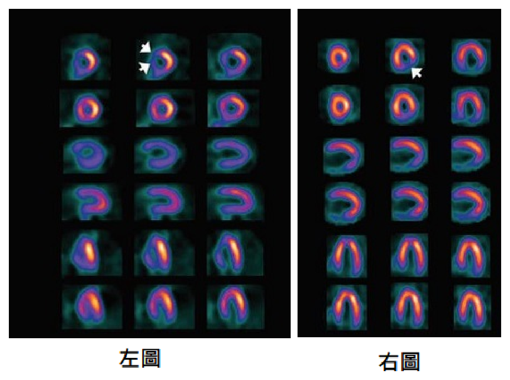
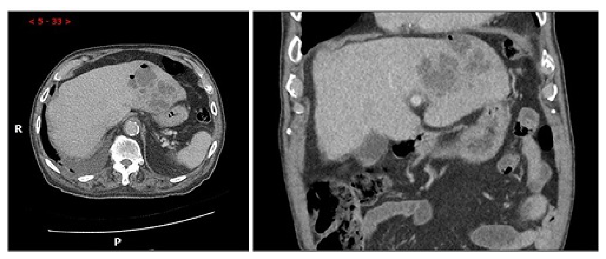
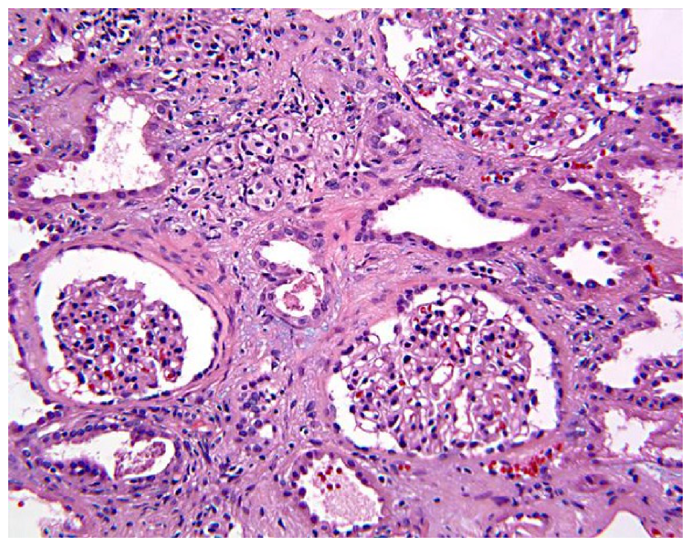
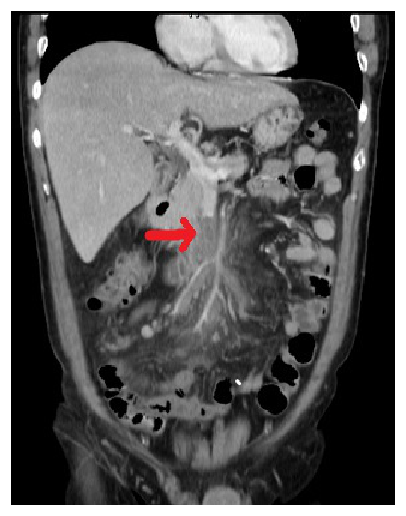

開卷有益 ／
醫師 ／ 醫學（三）（包括內科、家庭醫學科等科目及其相關臨床實例與醫學倫理） ／ 113 年第 2 次113 年第 2 次醫師醫學（三）（包括內科、家庭醫學科等科目及其相關臨床實例與醫學倫理）試題與答案
這一頁是民國 113 年第 2 次醫師醫學（三）（包括內科、家庭醫學科等科目及其相關臨床實例與醫學倫理）的整份歷屆試題，共 80 題，題目與標準答案出自考選部「國家考試試題及測驗式試題答案」開放資料，其中 80 題附有詳解。以下逐題列出題幹、選項與答案；要計時作答或記錄成績，請用線上練習。
考選部原始場次代碼：113070
線上作答這一科 →
全部 80 題
第 1 題
葡萄柚汁（grapefruit juice）會抑制代謝酵素cytochrome P450（CYP）3A的活性而使某些藥物的血中濃度增高，下列何者主要的代謝途徑不是經由CYP3A？
（A） pravastatin（B） lovastatin（C） simvastatin（D） atorvastatin答案：（A）
詳解與考點 正解：葡萄柚汁抑制 CYP3A，須找主要代謝不依賴 CYP3A 的 statin。pravastatin 主要不經 CYP3A4 代謝，較不會因葡萄柚汁而明顯提高血中濃度，故選 A。
B：lovastatin 是 CYP3A4 的受質；葡萄柚汁抑制腸道 CYP3A4 後會增加其暴露量，因而提高肌病變等不良反應風險。
C：simvastatin 亦主要經 CYP3A4 代謝。它看似同為降血脂藥而難與 pravastatin 區分，但 CYP3A4 交互作用正是其重要差異。
D：atorvastatin 雖不像 lovastatin、simvastatin 那樣高度依賴 CYP3A4，仍以 CYP3A4 為重要代謝途徑，故不符題意。
本題考點：藥物代謝（drug metabolism）——CYP3A4 受質可能受葡萄柚汁抑制而濃度上升；statin 的代謝途徑差異——pravastatin 非主要經 CYP3A4 代謝，可用於辨識交互作用。
第 2 題
關於懷孕期甲狀腺功能變化的敘述，下列何者最不適當？
（A） 懷孕期因雌激素（estrogen）刺激甲狀腺素結合蛋白（thyroxine-binding globulin）製造，導致血中total T3、total T4上升（B） 第一孕程（first trimester）的中後段，因高濃度人類絨毛膜促性腺激素（human chorionicgonadotropin, hCG）刺激甲狀腺，造成free T3、free T4上升（C） 對於甲狀腺功能亢進（hyperthyroidism）的患者，在第一孕程（first trimester）使用methimazole可能與胚胎疾病相關聯（D） 懷孕期以甲狀腺素（thyroxine）治療甲狀腺功能低下（hypothyroidism），目標是維持TSH在正常範圍，常需比懷孕前使用更低的劑量答案：（D）
詳解與考點 正解：懷孕期甲狀腺素替代治療的劑量變化。懷孕後雌激素使甲狀腺素結合蛋白增加，且胎兒與胎盤相關需求提高；既有甲狀腺功能低下者通常需要增加 levothyroxine 劑量，並以孕期特異的 TSH 目標追蹤。因此（D）說「常需比懷孕前更低的劑量」方向相反，為最不適當，故選 D。
A：雌激素會增加甲狀腺素結合蛋白（thyroxine-binding globulin）生成，使結合型荷爾蒙增加，故 total T3、total T4 上升，敘述正確。
B：第一孕程 hCG 可刺激 TSH receptor，使 TSH 降低且 free T4 可暫時升高；此為妊娠早期常見的生理變化。
C：methimazole 在第一孕程與特定胚胎病變相關，故此時選藥須特別考量致畸風險；敘述正確。
本題考點：妊娠甲狀腺生理（thyroid physiology in pregnancy）——雌激素增加 thyroxine-binding globulin、hCG 可短暫刺激甲狀腺；甲狀腺功能低下的 levothyroxine 替代通常需隨孕期增加。
第 3 題
70歲男性最近半年喉嚨時常有異物感，吞嚥時較為困難，且後咽部有刺痛感，最近1個月喝水時常發生咳嗽且水從鼻孔流出的現象，病人因此有點害怕吞嚥。關於此病人症狀的描述，不包含下列何者？
（A） transfer dysphagia（B） aphagia（C） odynophagia（D） phagophobia答案：（B）
詳解與考點 正解：病人雖吞嚥困難、吞嚥疼痛且害怕吞嚥，但仍能進食與飲水；因此不包含的是完全無法吞嚥的 aphagia，故選 B。
A：喝水時咳嗽及水由鼻孔流出，提示口咽期吞嚥動作與食團轉運異常，符合 transfer dysphagia。
C：後咽部刺痛屬吞嚥疼痛，即 odynophagia；它看似可被「吞嚥困難」涵蓋，但疼痛是獨立描述的症狀。
D：因害怕吞嚥而迴避進食，符合 phagophobia，即對吞嚥的恐懼。
本題考點：吞嚥症狀（dysphagia symptoms）——transfer dysphagia 指口咽期轉運障礙；aphagia 指完全不能吞嚥；odynophagia 指吞嚥疼痛；phagophobia 指害怕吞嚥。
第 4 題
有一位75歲男性病患，因最近2日呈嗜睡狀態、進食明顯減少而就醫。病患罹患高血壓與糖尿病25年以上，並因末期腎病接受長期血液透析治療已10年。病人平躺時，將其脖子向前彎，觀察其髖部及膝蓋是否有自主性屈曲（flexion）動作，此項身體診察欲測試的為何？
（A） Babinski's sign（B） Brudzinski's sign（C） Kernig's sign（D） Trendelenburg's sign答案：（B）
詳解與考點 正解：病人仰臥、被動屈頸時觀察髖與膝是否反射性屈曲。這是 Brudzinski's sign，用於檢查腦膜刺激徵象（meningeal irritation），故選 B。
A：Babinski's sign 是以鈍器刺激足底外側，觀察拇趾背屈及其他足趾張開，反映上運動神經元病變，檢查方式不同。
C：Kernig's sign 是屈髖屈膝後嘗試伸直膝關節，若出現疼痛或阻力則支持腦膜刺激，並非本題的屈頸動作。
D：Trendelenburg's sign 是單腳站立時觀察對側骨盆是否下垂，用於評估髖外展肌功能，與腦膜刺激無關。
本題考點：腦膜刺激徵象（meningeal signs）——Brudzinski's sign 為屈頸引發髖膝反射性屈曲；Kernig's sign 則以伸膝誘發疼痛或阻力。
第 5 題
承上題，上述病人經實驗室檢查發現：血鈣2.78 mmol/L、血清白蛋白2.8 g/dL、胸部X光片異常。則此病人高鈣血症最不可能由下列那一原因引起？
（A） 肺結核（tuberculosis）（B） 肺部鱗狀細胞癌（squamous cell carcinoma）（C） 次發性副甲狀腺機能亢進（secondary hyperparathyroidism）（D） 三發性副甲狀腺機能亢進（tertiary hyperparathyroidism）答案：（C）
詳解與考點 正解：長期透析病人合併高血鈣，須區分慢性腎病的次發性與三發性副甲狀腺機能亢進。血鈣為 2.78 mmol/L，白蛋白為 2.8 g/dL；換算白蛋白 28 g/L，校正血鈣約為 2.78+0.02×（40-28）＝3.02 mmol/L，確認為高鈣血症。次發性副甲狀腺機能亢進通常由慢性腎病的低血鈣、高磷與維生素 D 活化不足所驅動，故最不可能直接造成此高鈣血症，選 C。
A：肉芽腫性疾病如肺結核可增加活性維生素 D 生成，增加腸道鈣吸收而造成高鈣血症，故可為原因。
B：肺部鱗狀細胞癌可分泌類副甲狀腺素相關蛋白（parathyroid hormone-related protein, PTHrP），是惡性腫瘤相關高鈣血症的典型機轉。
D：長期次發性副甲狀腺機能亢進可進展為三發性副甲狀腺機能亢進，腺體轉為自主分泌 PTH，因而可導致高鈣血症；這正與透析病史相符。
本題考點：校正血鈣（corrected calcium）——低白蛋白時應校正總血鈣；慢性腎病礦物質骨病（chronic kidney disease-mineral and bone disorder）——次發性副甲狀腺機能亢進多與低鈣傾向相關，三發性則可造成高鈣血症。
第 6 題
下列有關急性心肌梗塞的敘述，何者正確？
（A） ST段上升心肌梗塞（STEMI）之致病冠狀動脈血管病灶，通常都是慢性、無血栓存在之高度狹窄，平時血流供應就不足，在心肌需氧量急遽增加、例如激烈運動時，無法維持心肌細胞需求而造成壞死（B） ST段上升心肌梗塞（STEMI）若不及時恢復心肌灌流，所有病人心電圖最後都會出現Q波（C） 第一型、自發性心肌梗塞，連續心肌酶cardiac troponin監測，不會有升高至大於99百分位（99thpercentile）參考值上限（upper reference limit）（D） 第五型心肌梗塞，連續心肌酶cardiac troponin監測，應該至少有一次升高至大於99百分位（99thpercentile）參考值上限（upper reference limit）之十倍答案：（D）
詳解與考點 正解：第五型心肌梗塞，即與冠狀動脈繞道手術（CABG）相關的心肌梗塞。若術前 troponin 正常，診斷時須有 cardiac troponin 升至 99th percentile 參考上限的 10 倍以上，並合併缺血相關證據；（D）所述的生物標記門檻正確，故選 D。
A：STEMI 多由易破裂粥樣斑塊形成急性血栓、導致冠狀動脈急性阻塞；並非通常是無血栓的慢性固定性高度狹窄。
B：未及時再灌流的 STEMI 可能形成 Q 波，但並非所有病人最後都會出現 Q 波；Q 波與梗塞範圍、部位及再灌流情形有關。
C：第一型自發性心肌梗塞的必要條件之一是 cardiac troponin 有上升與／或下降，且至少一值超過 99th percentile 參考上限；此選項將方向說反。
本題考點：心肌梗塞分類（myocardial infarction types）——第一型心肌梗塞通常源於急性冠狀動脈血栓；第五型心肌梗塞與 CABG 相關，需以 troponin 與缺血證據共同判定。
第 7 題
下列有關成人先天性心臟病之敘述，何者正確？
（A） 心房中隔缺損（atrial septal defect, ASD）為常見之成人先天性心臟病之一，因存在「左往右分流（left-to-right shunt）」，因此右心室擴大，且可能產生肺動脈高壓（B） Ebstein氏異常（Ebstein anomaly）患者，因先天二尖瓣環較正常人為低而更靠近心尖部，因此常有反流現象造成左心房擴大（C） 部分肺靜脈回流異常（partial anomalous pulmonary venous return, PAPVR）因終究會造成肺動脈高壓，因此經確診後應儘早進行外科手術治療（D） 心室中隔缺損（ventricular septal defect, VSD）因存在高壓力差，所以無論缺損大小，很少會自行關閉答案：（A）
詳解與考點 正解：ASD 的左往右分流造成右心容量負荷。血液由左心房流向右心房後，肺血流與右心室負荷增加，久之可出現右心室擴大及肺動脈高壓，故（A）正確。
B：Ebstein anomaly 是三尖瓣瓣環向心尖端位移，使右心房擴大與三尖瓣逆流；選項誤寫成二尖瓣與左心房。
C：PAPVR 的處置取決於分流量、右心擴大與症狀，並非一經確診就必然立即手術；它看似會增加肺血流，但病程與手術適應症仍須個別評估。
D：VSD 是否自行關閉與缺損的位置與大小有關，小型肌性 VSD 常可自行關閉，不能因壓差大就稱無論大小都很少關閉。
本題考點：心房中隔缺損（atrial septal defect, ASD）——左往右分流導致右心容量負荷與肺血流增加；成人先天性心臟病（adult congenital heart disease）——PAPVR 與 VSD 的治療須依解剖與血流動力學評估。
第 8 題
下列對於診斷冠狀動脈心臟病的工具的適切性（appropriateness），何者敘述錯誤？
（A） 對於冠狀動脈心臟病接受過支架治療的病人，無論有無症狀，每年定期做壓力摧迫性（stress）測試並非必要（B） 冠狀動脈心臟病低風險但有典型胸痛症狀的病人，也可考慮運動心電圖壓力摧迫性（stress）測試以評估風險（C） 冠狀動脈心臟病高風險，在典型胸痛症狀的病人，且無法運動或是無法接受壓力摧迫性（stress）測試時，考慮做心導管檢查是適切的（D） 具有典型胸痛症狀的病人，無論冠狀動脈心臟病風險高低，電腦斷層鈣化指數都是最合適的檢查工具答案：（D）
詳解與考點 正解：有典型胸痛時檢查應依冠狀動脈心臟病的事前機率與可運動、心電圖可判讀性選擇，而非一律做鈣化指數。冠狀動脈鈣化指數主要用於無症狀者的風險分層，不能作為所有典型胸痛病人的「最合適」工具，故錯誤的是 D。
A：支架治療後的無症狀病人不需要每年例行壓力測試；出現症狀或臨床風險改變時再針對性檢查較合理。
B：低風險但有典型胸痛且可運動、基礎心電圖可判讀者，可考慮運動心電圖壓力測試以進行評估，敘述正確。
C：高風險典型胸痛者若無法運動或無法完成壓力測試，侵入性冠狀動脈攝影可作為適當評估途徑，尤其在臨床高度懷疑缺血時。
本題考點：胸痛診斷（chest pain evaluation）——檢查選擇須結合事前機率與病人能否完成測試；冠狀動脈鈣化指數（coronary artery calcium score）主要用於無症狀者的風險分層，不取代症狀性病人的缺血評估。
第 9 題
下列何者最不可能造成房室傳導阻斷（atrioventricular block）？
（A） carotid sinus hypersensitivity（B） Lyme disease（C） myocardial infarction（D） cat scratch disease答案：（D）
詳解與考點 正解：能否直接影響房室結或其血液供應。cat scratch disease 典型表現為局部淋巴結炎，並非房室傳導阻斷的常見病因，故最不可能的是 D。
A：carotid sinus hypersensitivity 使迷走神經張力增加，可抑制房室結傳導而造成心搏過緩或房室傳導阻斷。
B：Lyme disease 可造成 Lyme carditis，影響傳導系統並出現不同程度的房室傳導阻斷，是重要的可逆病因。
C：心肌梗塞，特別是影響傳導系統或房室結供血的梗塞，可引發新的房室傳導阻斷。
本題考點：房室傳導阻斷（atrioventricular block）——病因包括迷走神經張力增加、Lyme carditis 與心肌梗塞；貓抓病（cat scratch disease）以淋巴結炎為典型表現。
第 10 題
一位30歲男性，過去有法洛式四重症（tetralogy of Fallot）病史並開過刀。早上突然因為胸悶至急診，十二導程心電圖顯示 left bundle branch block（LBBB）pattern monomorphic ventriculartachycardia（VT）。下列何者最有可能為此患者VT出處（origin）？
（A） right atrium（B） right ventricle（C） left atrium（D） left ventricle答案：（B）
詳解與考點 正解：已修補法洛式四重症後出現 LBBB pattern 的單形性 VT。VT 的 QRS 呈 LBBB pattern 代表電活動由右心室向左心室傳播；加上法洛式四重症手術疤痕常在右心室流出道形成折返迴路，最可能起源於 right ventricle，故選 B。
A：right atrium 的心律不整通常為心房性心律不整，不會形成由心室起源的單形性 VT。
C：left atrium 同樣只能產生心房性心律不整，無法解釋 VT 的心電圖型態。
D：left ventricle 起源的 VT 通常使去極化方向偏向右側，較常呈 RBBB pattern；LBBB pattern 正是本題用來定位右心室起源的誘答鑑別。
本題考點：心室頻脈（ventricular tachycardia, VT）定位——LBBB pattern 通常提示右心室起源；法洛式四重症修補術後（repaired tetralogy of Fallot）可因右心室流出道疤痕形成折返性 VT。
第 11 題
關於瓣膜性心臟病的描述，下列何者錯誤？
（A） 主動脈瓣二葉畸形（bicuspid aortic valve）伴隨的主動脈病變，主要是發生在主動脈弓（B） 隨著人口的老化，感染性心內膜炎的發生率升高（C） 成人發生的主動脈瓣狹窄，主要是因主動脈瓣退化性鈣化造成的（D） 傳統的動脈粥狀硬化危險因子，常會合併出現在鈣化性主動脈瓣狹窄的進展過程中答案：（A）
詳解與考點 正解：主動脈瓣二葉畸形相關主動脈病變的好發部位。bicuspid aortic valve 的擴張與主動脈病變主要累及主動脈根部及升主動脈，不是主要發生在主動脈弓，因此錯誤的是 A。
B：人口老化、人工瓣膜與醫療相關暴露增加，均使感染性心內膜炎在高齡族群的重要性上升，敘述正確。
C：成人主動脈瓣狹窄最常見的原因是退化性鈣化，與老化相關，敘述正確。
D：高血壓、吸菸、高脂血症等傳統動脈粥狀硬化危險因子，常與鈣化性主動脈瓣狹窄的發生與進展並存，敘述正確。
本題考點：主動脈瓣二葉畸形（bicuspid aortic valve）——相關主動脈病變主要涉及主動脈根部與升主動脈；鈣化性主動脈瓣狹窄（calcific aortic stenosis）——成人常見的退化性瓣膜病。
第 12 題
關於心包膜疾病的描述，下列何者正確？
（A） 心包填塞（cardiac tamponade）的三個主要特徵（Beck's triad）為hypotension、pericardialfriction rub和jugular venous distention（B） 心包膜積水在臨床優先考慮的診斷工具為胸部X光（C） 限制性心肌病（restrictive cardiomyopathy）經常合併有束縮性心包膜炎（constrictivepericarditis）（D） 心包膜積水的病人一旦發現有心包填塞（cardiac tamponade），此時應緊急施行心包腔穿刺（pericardiocentesis）答案：（D）
詳解與考點 正解：心包積水已造成心包填塞，屬阻塞性休克的緊急狀況，須立即解除心包腔壓力。緊急心包腔穿刺（pericardiocentesis）可恢復心室舒張充填與心輸出量，故（D）正確。
A：Beck's triad 為低血壓、頸靜脈怒張與心音低沉，並非 pericardial friction rub；摩擦音是急性心包膜炎較典型的發現。
B：心臟超音波可迅速確認心包積水及其血流動力學影響，是臨床優先的診斷工具；胸部 X 光僅可能見到心影擴大且不適合緊急判斷。
C：限制性心肌病與束縮性心包膜炎都是舒張功能障礙的鑑別診斷，前者不是經常合併後者。
本題考點：心包填塞（cardiac tamponade）——Beck's triad 為低血壓、頸靜脈怒張、心音低沉；心包腔穿刺（pericardiocentesis）——血流動力學不穩定的心包填塞需緊急減壓。
第 13 題
有關心衰竭的敘述，下列何者錯誤？
（A） 冠狀動脈疾病通常被認為是心衰竭的重要原因（B） 心衰竭在家族裡可有群聚效應。例如，親代心衰竭與其後代的左心室質量、心臟大小、收縮功能異常的比例有關（C） 長期嚴重高血壓也是造成心衰竭的原因之一（D） 左心室射出分率正常的心衰竭（heart failure with preserved ejection fraction）的病人與左心室射出分率降低的心衰竭（heart failure with reduced ejection fraction）的病人其病因存在相當大的重疊，以目前藥物治療臨床試驗對兩者的效果看起來是相同的答案：（D）
詳解與考點 正解：HFpEF 與 HFrEF 的藥物治療效果不能視為相同。兩者雖可共享冠狀動脈疾病與高血壓等病因，但病理生理與臨床試驗中可證實的治療效益並不完全一致；（D）稱兩者效果相同，為錯誤敘述，故選 D。
A：冠狀動脈疾病可造成缺血性心肌損傷與心室重塑，是心衰竭的重要病因，敘述正確。
B：心衰竭及其相關心臟結構、收縮功能可見家族聚集，反映遺傳與共享環境的影響，敘述正確。
C：長期嚴重高血壓造成左心室肥厚、舒張與收縮功能異常，可導致心衰竭，敘述正確。
本題考點：保留射出分率心衰竭（heart failure with preserved ejection fraction, HFpEF）與降低射出分率心衰竭（heart failure with reduced ejection fraction, HFrEF）——病因可重疊，但機轉與治療實證不相同；心衰竭病因（heart failure etiology）——冠狀動脈疾病與高血壓皆為重要原因。
第 14 題
有關心臟核子醫學心肌灌注掃描SPECT的描述，何者錯誤？

（A） 壓力測試核子醫學心肌灌注掃描（SPECT）常用於冠狀動脈疾病評估（B） 附圖（左）核子醫學心肌灌注掃描（SPECT）呈現可逆的心肌灌注缺損，暗示心肌有缺血（C） 附圖（右）核子醫學心肌灌注掃描（SPECT）則呈現固定的灌注缺損，通常反映陳舊性心肌梗塞（D） 核子醫學心肌灌注掃描（SPECT）與電腦斷層冠狀動脈造影相比，對於冠狀動脈疾病的診斷更加敏感，尤其是在多支血管疾病的情況下答案：（D）
詳解與考點 正解：核子醫學心肌灌注掃描（myocardial perfusion SPECT）評估的是心肌相對灌流與缺血的功能性後果，並非直接顯示冠狀動脈管腔。與電腦斷層冠狀動脈造影（coronary CT angiography, CCTA）相比，SPECT 不會在冠狀動脈疾病診斷上普遍更敏感；尤其多支血管嚴重狹窄時，可能因各區域灌流都同步降低而出現相對均勻的影像，即平衡性缺血（balanced ischemia），反而可能低估缺血，故錯誤的是 D。
A：壓力測試下比較心肌灌流是評估冠狀動脈疾病的重要功能性檢查；運動或藥物壓力可增加心肌需氧量或改變冠狀動脈血流，讓具血流儲備不足的區域顯現灌流缺損，敘述正確。
B：左圖同一切面序列中可見部分心肌區域在一組影像的放射性攝取較低、呈缺損，而在另一組影像中回復較完整的環狀攝取；這種壓力時缺損、休息時改善的可逆性灌注缺損（reversible perfusion defect）代表存活心肌的誘發性缺血，敘述正確。
C：右圖可見特定心肌區域在兩組對照影像中均持續呈現低攝取或缺損，沒有隨另一階段檢查而明顯恢復；固定性灌注缺損（fixed perfusion defect）常反映瘢痕化的陳舊性心肌梗塞，敘述正確。
本題考點：心肌灌注掃描（myocardial perfusion SPECT）以壓力與休息影像區分可逆性缺血與固定性瘢痕；電腦斷層冠狀動脈造影（CCTA）主要評估冠狀動脈解剖狹窄；多支血管疾病的平衡性缺血（balanced ischemia）是相對灌流影像可能漏診的限制。
第 15 題
有關自體免疫肝炎（autoimmune hepatitis）的病理機轉，何者錯誤？
（A） 病理特色為肝細胞的壞死發炎，經常合併纖維化，可能導致肝硬化甚至肝衰竭（B） 肝臟內調節性T淋巴細胞（regulatory T cells）活性上升（C） CTLA-4或TNFA*2的基因多形性（polymorphism）和此疾病的發生有關（D） 病患血清中常出現抗核抗體（antinuclear antibody）、antibody to liver-kidney microsomes（anti-LKM）等自體抗體答案：（B）
詳解與考點 正解：自體免疫肝炎的免疫耐受失衡。調節性 T 淋巴細胞（regulatory T cells）原本抑制自體反應性免疫；其功能或數量下降會使對肝細胞的免疫攻擊失去控制，而非活性上升，因此錯誤的是 B。
A：自體免疫肝炎可見肝細胞壞死發炎與纖維化，持續發炎可進展為肝硬化甚至肝衰竭，敘述正確。
C：免疫調節相關基因的多形性，包括 CTLA-4 與 TNF 相關基因，與疾病易感性有關，敘述正確。
D：抗核抗體（antinuclear antibody）與 anti-LKM 等自體抗體可見於自體免疫肝炎，是診斷評估的線索之一。
本題考點：自體免疫肝炎（autoimmune hepatitis）——免疫耐受失調導致肝細胞發炎；調節性 T 細胞（regulatory T cells）——其抑制功能不足有利於自體免疫反應持續。
第 16 題
一位50歲糖尿病人主訴右上腹痛、發燒5天來醫院求診，電腦斷層圖示如附圖，下列敘述何者錯誤？

（A） 應做血液細菌培養（B） 安排肝病灶抽吸（C） 有肝腫瘤可能（D） Escherichia coli是最常見的感染細菌答案：（D）
詳解與考點 正解：附圖的軸向與冠狀切面可見肝臟內大型、邊界不規則的低密度病灶，內部呈不均勻液化樣改變；結合糖尿病、右上腹痛與發燒5天，最符合化膿性肝膿瘍（pyogenic liver abscess）。在臺灣成人、尤其糖尿病患者的社區型化膿性肝膿瘍，最常見致病菌為 Klebsiella pneumoniae，而非 Escherichia coli，故錯誤的是 D。
A：化膿性肝膿瘍可伴隨菌血症，血液細菌培養有助於辨識致病菌並據以調整抗生素；最好於抗生素治療前採檢，故此敘述正確，並非答案。
B：影像導引下肝病灶抽吸可取得膿液作革蘭氏染色與培養，且對較大或需引流的膿瘍可兼具診斷與治療價值，故此敘述正確。
C：肝臟腫瘤可因中央壞死而呈現低密度病灶，也可能合併感染；因此影像上的肝病灶仍須納入肝腫瘤鑑別，並以抽吸結果及後續影像釐清，故此敘述正確。
本題考點：化膿性肝膿瘍（pyogenic liver abscess）的典型表現為發燒、右上腹痛與肝內液化病灶；糖尿病是 Klebsiella pneumoniae 肝膿瘍的重要宿主因子；血液與膿液培養（blood and abscess culture）可確認病原並指引治療。
第 17 題
關於腸躁症（irritable bowel syndrome）的敘述何者錯誤？
（A） 糞便檢查常見糞便潛血反應，也可見到糞便中白血球過多（B） 可以依照症狀分為便秘型、腹瀉型及混合型（C） 治療上的第一步是同理及支持病人，建議飲食上避免會發酵的寡糖類及豆類食物（D） 糞便體積增加劑（bulking agent）、止瀉劑、瀉劑、抗腸痙攣藥物、血清素促進劑或拮抗劑、抗憂鬱劑、選擇性血清素回收抑制劑等藥物及益生菌可以用來治療答案：（A）
詳解與考點 正解：腸躁症屬功能性腸胃疾病，通常沒有腸黏膜發炎或出血。糞便潛血陽性或糞便白血球增多應提示發炎性、感染性或其他器質性腸病，而非腸躁症的常見發現，因此錯誤的是 A。
B：腸躁症可依主要排便型態分為便秘型、腹瀉型與混合型，敘述正確。
C：建立同理支持的醫病關係與飲食調整是治療基礎；避免易發酵的寡糖類及部分豆類可減少腹脹等症狀，敘述正確。
D：治療可依症狀選用糞便體積增加劑、止瀉劑、瀉劑、抗腸痙攣藥物、血清素調節藥物、抗憂鬱劑與益生菌等，並非每位病人都需同時使用。
本題考點：腸躁症（irritable bowel syndrome, IBS）——為功能性腸胃疾病，沒有出血或糞便白血球增多等發炎警訊；警訊症狀（alarm features）——糞便潛血或發炎證據應促使尋找器質性疾病。
第 18 題
關於急性腸阻塞（acute intestinal obstruction）的敘述，下列何者錯誤？
（A） 機械性腸阻塞（mechanical obstruction）常見的原因為術後沾黏、腫瘤、疝氣、腸套疊或是腸扭轉，以及發炎性腸病變（B） 腸功能性阻塞也稱為偽阻塞（pseudo-obstruction），主要是腸道蠕動功能異常引起，常見的原因為脊椎受傷、代謝及電解質異常、使用鴉片類或是抗膽鹼藥物、腸道缺血等（C） 機械性腸阻塞（mechanical obstruction）阻塞處前端的腸子會擴大，腸管腔內壓力上升，之後導致腸壁水腫及缺氧，最後腸壁會缺血及壞死（D） 小腸阻塞時，腸音常會先由正常變慢（hypoactive）進展為無腸音（absent bowel sound）。之後因為腸子加速蠕動，會形成高頻（high-pitched）快速蠕動的腸音答案：（D）
詳解與考點 正解：機械性小腸阻塞早期的腸音變化。阻塞初期腸道為克服阻力會加強蠕動，因此常先聽到高頻、亢進的腸音；晚期腸道疲乏或缺血時才可能變慢、消失。（D）將順序顛倒，故為錯誤敘述。
A：術後沾黏、腫瘤、疝氣、腸套疊、腸扭轉及發炎性腸病變皆可造成腸腔的機械性阻塞，敘述正確。
B：偽阻塞是腸道動力障礙而非腸腔被堵塞，神經損傷、代謝或電解質異常、鴉片類與抗膽鹼藥物、腸缺血等均可誘發，敘述正確。
C：機械性阻塞近端腸管擴張後，腔內壓升高可造成腸壁水腫、缺氧、缺血與壞死，是絞扼與穿孔風險的病理過程。
本題考點：機械性腸阻塞（mechanical intestinal obstruction）——早期高頻亢進腸音、晚期可減弱或消失；腸道偽阻塞（pseudo-obstruction）——腸蠕動失調造成阻塞樣表現，但沒有固定機械性阻塞點。
第 19 題
幽門螺旋桿菌感染會造成胃潰瘍、胃癌及胃淋巴瘤之風險增加，因此必須選擇適當且高成功率之幽門螺旋桿菌除菌方法。下列除菌療法在clarithromycin抗藥比例小於15%之地區，何者目前不推薦使用？
（A） 七日療程之clarithromycin triple therapy（proton pump inhibitor, clarithromycin, amoxicillin）（B） 十四日療程之clarithromycin triple therapy（proton pump inhibitor, clarithromycin,amoxicillin）（C） 十至十四日療程之concomitant therapy（proton pump inhibitor, clarithromycin, amoxicillin,metronidazole）（D） 十至十四日療程之bismuth quadruple therapy（proton pump inhibitor, bismuth, tetracycline,metronidazole）答案：（A）
詳解與考點 正解：clarithromycin 抗藥率低於 15% 時，仍須比較療程長度對除菌成功率的影響。七日 clarithromycin triple therapy 的療程過短、除菌成功率較不足，故目前不推薦使用（A）；較長療程或四合一療法的成功率較佳。此題的推薦會受當地抗藥資料與指引更新影響
B：十四日 clarithromycin triple therapy 在 clarithromycin 抗藥率低的地區仍可作為選項；它看似與（A）藥物完全相同，但差異在療程由 7 日延長為 14 日。
C：concomitant therapy 同時使用 proton pump inhibitor、clarithromycin、amoxicillin 與 metronidazole，可提高除菌涵蓋性，非本題不推薦的短療程。
D：bismuth quadruple therapy 為含 bismuth、tetracycline 與 metronidazole 的四合一療法，常作為有效的除菌策略，非本題所問。
本題考點：幽門螺旋桿菌除菌（Helicobacter pylori eradication）——療程成功率受療程長度與 clarithromycin 抗藥性影響；四合一療法（quadruple therapy）——可用於提升除菌成功率與因應抗藥性。
第 20 題
對於膽結石引發之急性胰臟炎（acute pancreatitis），下列何者為最重要的治療？
（A） 抗生素（B） 內視鏡逆行性膽管造影術（endoscopic retrograde cholangiography）確認是否有總膽管結石，若有則進行內視鏡取石（C） 積極的靜脈輸液（D） 鼻胃管引流答案：（C）
詳解與考點 正解：急性胰臟炎初期最重要的是早期靜脈輸液等支持治療。應依血流動力學與容量狀態採適度、目標導向補液並密切重評，避免無差別大量輸液，故選 C。
A：無感染性壞死或其他明確感染證據時，不應例行使用抗生素。
B：ERCP 主要在合併膽管炎或持續膽道阻塞時考慮，並非所有膽結石胰臟炎的首要處置。
D：鼻胃管引流僅用於持續嘔吐、腸阻塞或無法進食等特定情形。
本題考點：急性胰臟炎（acute pancreatitis）的支持治療；目標導向輸液（goal-directed fluid resuscitation）；內視鏡逆行性膽胰管攝影（ERCP）的適應症。
第 21 題
下列何者不是慢性胰臟炎（chronic pancreatitis）常見的併發症？
（A） 慢性腹痛（B） 糖尿病酮酸中毒症（diabetic ketoacidosis）（C） 吸收不良（malabsorption）（D） 膽道狹窄答案：（B）
詳解與考點 正解：慢性胰臟炎造成胰外分泌與內分泌功能不足，但其糖尿病通常是胰源性糖尿病。因胰島素與升糖素分泌都可能不足，酮酸中毒並非其常見併發症；因此答案為 B。
A：反覆胰臟發炎、纖維化與胰管壓力上升可造成持續或反覆的慢性腹痛，是常見併發症。
C：胰外分泌不足會使消化酶缺乏，導致脂肪便與吸收不良，是慢性胰臟炎的典型問題。
D：胰頭部纖維化、發炎或假性囊腫壓迫可造成膽道狹窄，故屬可能併發症。
本題考點：慢性胰臟炎（chronic pancreatitis）——常見慢性腹痛、胰外分泌不足與吸收不良；胰源性糖尿病（pancreatogenic diabetes）——因同時缺乏胰島素與升糖素，糖尿病酮酸中毒較不常見。
第 22 題
對於肝硬化病人的胃食道靜脈曲張（gastroesophageal varices）處理，下列敘述何者正確？
（A） 食道靜脈曲張通常是在病人發生腹水之後才會出現（B） 新診斷的肝硬化病人，大約50%已經有胃食道靜脈曲張（C） 除了使用內視鏡來做靜脈結紮術（variceal ligation）外，藥物治療並無法有效的預防胃食道靜脈曲張出血（D） 就算發生胃食道靜脈曲張出血，只要還沒有黃疸，沒有腹水，沒有肝性腦病變，就還不算是肝失代償（decompensation）本題送分，無標準答案
詳解與考點 本題官方公告送分。
第 23 題
35歲患者有胃部分切除病史，主訴進食後腹痛、腹瀉，約2小時後有頭暈、盜汗症狀，最可能的診斷為何？
（A） afferent loop syndrome（B） adhesion ileus（C） dumping syndrome（D） postvagotomy diarrhea答案：（C）
詳解與考點 正解：胃部分切除後，進食約2小時才出現頭暈、盜汗等血管運動症狀，是晚期傾倒症候群（late dumping syndrome）的典型線索。食物快速進入小腸後造成血糖先快速上升、胰島素分泌過多，繼而發生反應性低血糖，故可有頭暈、盜汗；進食後腹痛、腹瀉亦支持傾倒症候群，故選 C。
A：afferent loop syndrome 多發生於胃切除與 Billroth II 重建後，因輸入袢阻塞導致膽汁與胰液鬱積，常見餐後上腹痛及非膽汁性嘔吐後緩解，不能以餐後2小時的低血糖樣自律神經症狀為主要表現。
B：adhesion ileus 是術後沾黏造成的機械性腸阻塞，應以腹痛、腹脹、嘔吐與排氣排便減少為主，並不會規律地在餐後出現盜汗與頭暈。
D：postvagotomy diarrhea 是迷走神經切斷術後的腹瀉併發症，雖然同樣可在胃手術後出現腹瀉而看似合理，但無法解釋本題延遲出現的頭暈、盜汗等反應性低血糖表現。
本題考點：傾倒症候群（dumping syndrome）——胃手術後食物快速進入小腸可致腹痛、腹瀉與血管運動症狀；晚期傾倒症候群（late dumping syndrome）主要由餐後反應性低血糖所致。
第 24 題
65歲男性，血液透析病人，每次透析開始幾分鐘後，開始右胸痛或背痛，血壓穩定、無心悸、無發燒，隨著透析繼續進行，不適感覺就漸消失，下列何種處置最可能改善其症狀？
（A） 使用無肝素（non-heparin）透析（B） 增加乾體重（C） 更換不同材質透析器（D） 使用鈉離子模式（sodium modeling）透析答案：（C）
詳解與考點 正解：透析開始數分鐘後胸痛或背痛、血壓穩定且隨透析持續緩解，較符合非特異性 type B dialyzer reaction。此反應與補體活化及透析膜生物相容性有關，輕症可隨透析持續緩解；更換不同材質透析器可減少復發，故選 C。
A：無肝素透析主要用於出血風險或肝素相關問題。
B：增加乾體重用於超濾過度或低血容量；本題血壓穩定且時間型態不符。
D：鈉離子模式可協助減少透析中低血壓或抽筋，不能處理透析膜相關反應。
本題考點：透析器反應（dialyzer reaction）——type B 多較非特異性且可緩解；透析膜生物相容性（biocompatibility）與症狀相關。
第 25 題
下列何項處置最不適合治療尿酸性尿路結石？
（A） reduced protein diet（B） benzbromarone（C） potassium citrate（D） febuxostat答案：（B）
詳解與考點 正解：尿酸性尿路結石的治療目標是降低尿酸生成、增加尿酸溶解度並減少尿酸負荷。benzbromarone 為促尿酸排泄藥（uricosuric agent），會增加尿中尿酸濃度，反而可能促進尿酸結晶形成，因此最不適合，故選 B。
A：reduced protein diet 可減少高嘌呤動物性蛋白攝取與尿酸生成，屬尿酸結石的合理飲食調整。
C：potassium citrate 可鹼化尿液；尿酸在較高尿液 pH 下溶解度增加，因此可用於尿酸性結石的預防及部分溶石治療。
D：febuxostat 為黃嘌呤氧化酶抑制劑（xanthine oxidase inhibitor），可降低尿酸生成；它與增加排尿酸的 benzbromarone 看似都能降低血尿酸，但前者不會直接提高尿中尿酸負荷，較符合尿酸結石的治療方向。
本題考點：尿酸性尿路結石（uric acid urolithiasis）——治療著重尿液鹼化與降低尿酸生成；促尿酸排泄藥（uricosuric agents）會增加尿中尿酸，可能不利於結石患者。
第 26 題
一名33歲女性，本次因近半年反覆頭暈及容易疲勞而住院。實驗室檢驗：肌酸酐2.3 mg/dL，血紅素7g/dL（住院前8個月分別為1.4 mg/dL，9 g/dL），白蛋白3.8 g/dL，血鈣2.3 mmol/L，尿酸8.0 mg/dL，血糖98 mg/dL，尿液分析：比重1.012，蛋白尿980 mg/24小時，紅血球0～2/高倍視野，葡萄糖0.27 mg/dL，腎臟超音波右側8.7公分、左側8.9公分，腎臟病理切片如圖。病人最可能的診斷為何？

（A） myeloma cast nephropathy（B） allergic interstitial nephritis（C） chronic uric acid nephropathy（D） aristolochic acid nephropathy答案：（D）
詳解與考點 正解：病人有進行性腎功能惡化、雙側腎臟縮小、輕度蛋白尿而尿沉渣幾乎無紅血球，且病理圖可見明顯間質纖維化、腎小管萎縮與腎小管周圍纖維化，腎絲球相對保留，符合馬兜鈴酸腎病變（aristolochic acid nephropathy）的慢性間質性腎炎型態，故選 D。
A：myeloma cast nephropathy 是游離輕鏈在腎小管內形成阻塞性管型，病理應以管腔內大量嗜伊紅、斷裂樣管型及周邊反應為主；本圖主要是慢性間質纖維化與腎小管萎縮，且33歲女性的臨床表現也不典型。
B：allergic interstitial nephritis 常為藥物相關急性腎損傷，病理特徵是間質水腫及嗜酸性球等發炎細胞浸潤；本圖以纖維化和萎縮為主，配合小腎臟，代表慢性而非急性過敏性病變。
C：chronic uric acid nephropathy 應有長期顯著高尿酸血症與尿酸鹽結晶沉積所致的間質病變；本例尿酸8.0 mg/dL不足以單獨支持此診斷，圖中也未見可辨識的結晶沉積。
本題考點：馬兜鈴酸腎病變（aristolochic acid nephropathy）為進行性慢性腎小管間質腎炎，常見腎小管萎縮與廣泛間質纖維化；慢性腎臟病（chronic kidney disease）可造成腎臟縮小、貧血及低比重尿。
第 27 題
一位40歲男性，C型肝炎帶原者，定期在門診追蹤。最近一個月來，出現蛋白尿2.5 g/day，脛前與足踝水腫，體重略增加近3公斤，血壓152/92 mmHg。抽血檢查：有血清補體（complement, C3與C4）偏低情形。因為不明原因蛋白尿，安排病人接受腎臟切片檢查（renal biopsy），切片下的病理變化，最有可能是下列何者？
（A） membranous nephropathy（MN）（B） membranoproliferative glomerulonephritis（MPGN）（C） focal segmental glomerulosclerosis（FSGS）（D） Henoch-Schönlein purpura（HSP）答案：（B）
詳解與考點 正解：C型肝炎帶原合併蛋白尿、水腫、高血壓與 C3、C4 皆低，提示免疫複合體相關腎絲球腎炎；C型肝炎最具代表性的腎臟病變為膜增生性腎絲球腎炎（membranoproliferative glomerulonephritis, MPGN），常與混合型冷凝球蛋白血症相關並消耗補體，故選 B。
A：membranous nephropathy 可表現為腎病症候群與蛋白尿，但典型原發性病程通常不以低補體為特徵，與本題病毒感染及 C3、C4 下降的組合較不相符。
C：FSGS 也可造成大量蛋白尿，但屬足細胞病變，通常不造成補體消耗，無法解釋本題低補體線索。
D：Henoch-Schönlein purpura 是 IgA 血管炎，常有紫斑、腹痛與關節症狀，腎炎時血清補體多正常，且與 C型肝炎相關 MPGN 的典型關聯不同。
本題考點：C型肝炎相關腎病（hepatitis C virus-associated glomerulopathy）——常見免疫複合體型膜增生性腎絲球腎炎（MPGN）；低補體可提示補體消耗的免疫複合體病程。
第 28 題
有關腎小管–腎絲球回饋機轉（tubuloglomerular feedback, TGF），下列敘述何者正確？
（A） 藉由出球小動脈（efferent arteriole）的反射性血管收縮或擴張來調節腎絲球過濾率（glomerularfiltration rate）（B） 藉由Henle氏環上行枝粗管的管腔膜上緻密斑（macula densa）細胞來感應腎小管內NaCl濃度及液體的流速（C） 當過高的腎絲球過濾率（glomerular filtration rate）使流經緻密斑（macula densa）的NaCl濃度過高時，會誘發出球小動脈血管收縮使得腎絲球過濾率下降至正常（D） NaCl再吸收增加時，二磷酸腺苷（adenosine diphosphate, ADP）是緻密斑（macula densa）細胞釋放出來的訊號，來調控腎小管–腎絲球回饋答案：（B）
詳解與考點 正解：腎小管－腎絲球回饋（tubuloglomerular feedback, TGF）的感受器是 Henle 氏環上行枝粗管末端的緻密斑（macula densa），它偵測管腔內 NaCl 輸送量，並藉此調整腎絲球過濾率，故選 B。
A：TGF 的主要血管效應器是入球小動脈（afferent arteriole），不是出球小動脈；改變入球小動脈阻力才直接調節進入腎絲球的血流與過濾壓。
C：當緻密斑偵測到 NaCl 過高時，會促使入球小動脈收縮以降低腎絲球過濾率；此選項把收縮血管誤寫成出球小動脈，是看似符合負回饋方向卻錯在效應器。
D：緻密斑對高 NaCl 的訊號涉及 ATP 與腺苷（adenosine）等，而非二磷酸腺苷（adenosine diphosphate, ADP）；且高 NaCl 時是增加而非「NaCl 再吸收增加」作為主要觸發描述。
本題考點：腎小管－腎絲球回饋（tubuloglomerular feedback, TGF）——緻密斑（macula densa）偵測遠端 NaCl 輸送量；高 NaCl 會使入球小動脈收縮，降低腎絲球過濾率（glomerular filtration rate, GFR）。
第 29 題
有關腫瘤溶解症候群（tumor lysis syndrome），下列敘述何者最不適當？
（A） 因為大量腫瘤細胞死亡，細胞內代謝物釋放至血液中導致高尿酸血症、高血鉀症、高血磷症（B） 由於尿酸結晶會堆積於腎小管，處置上必須給與大量補充體液，並用rasburicase藥物來預防高尿酸血症（C） 鹼化尿液能夠減少磷酸鈣（calcium phosphate）的沉澱而降低急性腎損傷（D） 若造成急性腎損傷合併寡尿、高血鉀症，可考慮透析治療答案：（C）
詳解與考點 正解：腫瘤溶解症候群（tumor lysis syndrome, TLS）會有高尿酸血症與高磷血症；尿液鹼化會降低尿酸沉澱的機會，卻會提高磷酸鈣沉澱的風險，故不能說能減少磷酸鈣沉澱。此敘述方向相反，是最不適當者，故選 C。
A：大量腫瘤細胞死亡後，細胞內鉀、磷酸鹽與核酸代謝產物釋出，可造成高血鉀症、高血磷症與高尿酸血症，敘述正確。
B：積極補充體液可增加腎臟灌流與尿量；rasburicase 可將尿酸轉為溶解度較高的代謝物，是高風險 TLS 降低尿酸負荷的合理處置。
D：TLS 若合併急性腎損傷、寡尿及難以控制的高血鉀症，透析可處理危及生命的電解質失衡與代謝物累積，敘述適當。
本題考點：腫瘤溶解症候群（tumor lysis syndrome, TLS）——細胞崩解造成高鉀、高磷與高尿酸；磷酸鈣沉澱與尿液鹼化的關係須謹慎辨別，必要時以透析處理嚴重併發症。
第 30 題
下列有關腎移植抗排斥藥物與其副作用之配對，何者錯誤？
（A） 類固醇（corticosteroid）：骨質疏鬆（B） 環孢靈（cyclosporine）：低尿酸血症（C） 普樂可復（tacrolimus）：移植後糖尿病（D） 斥消靈（sirolimus）：蛋白尿答案：（B）
詳解與考點 正解：環孢靈（cyclosporine）是鈣調神經磷酸酶抑制劑（calcineurin inhibitor），會降低腎臟尿酸排泄而造成高尿酸血症，不是低尿酸血症；因此此配對錯誤，故選 B。
A：類固醇（corticosteroid）長期使用會增加骨質流失與骨質疏鬆風險，配對正確，故非答案。
C：普樂可復（tacrolimus）可造成糖尿病性傾向與移植後糖尿病（post-transplant diabetes mellitus），配對正確，故非答案。
D：斥消靈（sirolimus）為 mTOR 抑制劑（mTOR inhibitor），可與蛋白尿等腎臟不良反應相關，配對正確，故非答案。
本題考點：腎移植免疫抑制劑（immunosuppressants）——環孢靈與 tacrolimus 同屬鈣調神經磷酸酶抑制劑；環孢靈可造成高尿酸血症，tacrolimus 可增加移植後糖尿病風險。
第 31 題
關於IgG4-related disease的描述，下列何者最適當？
（A） 可侵犯眼部造成periocular tissue swelling，可能合併有allergy和eosinophilia（B） 主要的組織病理特點為IgG4在組織血管內的沉積，但不會看到B淋巴球的浸潤（C） 大於90%病人血中IgG4的濃度會上升，且血中IgG4的濃度與疾病嚴重度成正相關（D） 大量IgG4在組織活化T淋巴球，因此本疾病常造成急性的器官破壞而應給與大量steroid治療答案：（A）
詳解與考點 正解：IgG4-related disease 是可侵犯多器官的慢性纖維發炎疾病，眼眶及眼周組織受累可造成 periocular tissue swelling，部分患者有過敏病史或嗜酸性白血球增多，故選 A。
B：其典型組織病理不是 IgG4 在血管內沉積，而是濃密淋巴漿細胞浸潤、IgG4 陽性漿細胞增加、席紋狀纖維化與常見的閉塞性靜脈炎；B淋巴球與漿細胞相關浸潤並非缺席。
C：血中 IgG4 濃度可上升但敏感性與特異性都有限，並非超過90%患者都升高，也不能單靠其濃度判定疾病嚴重度。
D：IgG4-related disease 的病程多為慢性、漸進性纖維發炎，不是由大量 IgG4 活化 T淋巴球導致急性器官破壞；治療強度須依器官受累與嚴重度個別決定。
本題考點：IgG4相關疾病（IgG4-related disease）——可造成眼眶、胰臟、唾液腺等器官腫大；診斷須整合臨床、血清與組織病理，不能只憑血中 IgG4 濃度。
第 32 題
一位80歲男性病人有膝關節疼痛，膝關節液的分析為呈現黏稠的（viscous）關節液且白血球數為100/μL，關節液細胞以mononuclear cell為主，此病人最可能患有下列何種關節炎？
（A） osteoarthritis（B） reactive arthritis（C） rheumatoid arthritis（D） septic arthritis答案：（A）
詳解與考點 正解：關節液黏稠、白血球僅100/μL且以單核球為主，屬非發炎性關節液（noninflammatory synovial fluid）。高齡患者膝痛合併此關節液型態最符合退化性關節炎（osteoarthritis），故選 A。
B：reactive arthritis 為發炎性關節炎，關節液白血球通常會上升，與本題僅100/μL的非發炎型態不符。
C：rheumatoid arthritis 也會造成發炎性滑膜炎，關節液白血球數應較高且常有多形核白血球增加，不能由本題低白血球、黏稠關節液支持。
D：septic arthritis 常有明顯發炎症狀與高度白血球關節液，須視為急症；本題關節液細胞極低且以單核球為主，與感染性關節炎相反。
本題考點：關節液分析（synovial fluid analysis）——退化性關節炎多為非發炎性、黏稠且低白血球關節液；類風濕性與感染性關節炎則屬發炎性關節液。
第 33 題
有關類風濕性關節炎的關節外表現（extraarticular manifestations），下列何者最常見？
（A） hyperandrogenism（B） osteoporosis（C） pulmonary artery hypertension（D） lumbar myelopathy答案：（B）
詳解與考點 正解：類風濕性關節炎（rheumatoid arthritis, RA）的關節外影響可包括骨質流失；慢性發炎、活動受限及部分治療因素都會增加骨質疏鬆（osteoporosis）風險，在所列選項中最常見，故選 B。
A：hyperandrogenism 並非 RA 的典型關節外表現，與 RA 的系統性發炎併發症無直接對應。
C：pulmonary artery hypertension 可見於某些結締組織疾病，但不是 RA 最常見的關節外表現；RA 更常見的是肺部、眼部、皮下結節與骨質相關影響。
D：lumbar myelopathy 不是 RA 的典型關節外表現；RA 的頸椎病變較可能造成脊髓壓迫，不能以腰椎脊髓病變作為常見表現。
本題考點：類風濕性關節炎關節外表現（extraarticular manifestations of RA）——除關節滑膜炎外，須注意骨質疏鬆與多系統影響；慢性發炎本身即會增加骨質流失風險。
第 34 題
下列疾病與human leukocyte antigen（HLA）之相關性，何者最高？
（A） Type 1 diabetes mellitus與HLA-B5801（B） Behçet's disease與HLA-B1502（C） Sjögren's syndrome與HLA-DR8（D） 類風濕性關節炎（rheumatoid arthritis）與HLA-DR4答案：（D）
詳解與考點 正解：類風濕性關節炎與 HLA-DR4 的關聯是經典且強的 HLA 疾病相關性，故選 D。
A：Type 1 diabetes mellitus 主要與 HLA-DR3、HLA-DR4 等 class II HLA 相關；HLA-B5801 反而是 allopurinol 嚴重皮膚不良反應的重要遺傳風險標記。
B：Behçet's disease 的經典關聯為 HLA-B51，而非 HLA-B1502；HLA-B1502 是 carbamazepine 相關嚴重皮膚不良反應的常考標記。
C：Sjögren's syndrome 常與 HLA-DR3 等 class II HLA 相關，HLA-DR8 並非其最具代表性的強關聯。
本題考點：人類白血球抗原（human leukocyte antigen, HLA）與自體免疫疾病——類風濕性關節炎（rheumatoid arthritis）常與 HLA-DR4 相關；不同 HLA 等位基因亦可提示特定藥物不良反應風險。
第 35 題
34歲陳女士，因為多次原因不明的laryngeal edema掛急診，其中一次因喉頭水腫太嚴重無法插管，還需緊急氣切才挽回生命。陳女士記得她從有記憶起，就曾經多次因為嚴重腹痛合併腹水而住院，但都沒有找到病因。平時也有很多次突然整個臉或手掌、腳掌突然腫起來。病人發作時皮膚從來沒有蕁麻疹，好幾位醫師曾經幫她驗過血，但也都沒有找到過敏原。下列處置何者對病情最沒有幫助？
（A） 檢驗血中C4（B） 檢驗C1 esterase inhibitor（C） 檢驗total IgE（D） 處方danazol答案：（C）
詳解與考點 正解：反覆無蕁麻疹的喉頭、臉部與四肢血管性水腫，加上反覆腹痛及腹水，自幼發作，最符合遺傳性血管性水腫（hereditary angioedema, HAE）。此病為緩激肽（bradykinin）媒介，與 IgE 過敏機轉無關，因此檢驗 total IgE 對釐清病情最沒有幫助，故選 C。
A：C4 常因 C1 esterase inhibitor 缺陷或功能異常而降低，是懷疑 HAE 時有用的篩檢檢驗。
B：檢驗 C1 esterase inhibitor 的濃度及功能可協助確認 HAE 的類型，直接對應本題的致病機轉。
D：danazol 可提升 C1 esterase inhibitor 相關作用，曾用於部分 HAE 患者的長期預防；它不處理急性發作，但仍是與此疾病機轉相關的處置。
本題考點：遺傳性血管性水腫（hereditary angioedema, HAE）——緩激肽（bradykinin）媒介的血管性水腫通常沒有蕁麻疹；C4 與 C1 esterase inhibitor 檢驗比 IgE 過敏檢查更具診斷價值。
第 36 題
一位38歲女性，一開始以左側腋下腫瘤表現至醫院就診，腋下腫瘤切片證實為腺癌（adenocarcinoma），但乳房影像檢查（包括超音波，攝影及核磁共振）並無顯現乳房腫塊，關於此病人後續檢查或治療，下列何者最不合適？
（A） 檢測estrogen receptor、GATA3、HER-2基因表現（B） 同側乳房切除手術治療（C） 局部放射治療（D） 全身性化學治療或抗賀爾蒙治療答案：（B）
詳解與考點 正解：官方答案為 B；惟乳房影像陰性的隱匿性乳癌，乳房切除合併腋下處置仍是可接受的局部治療，不能稱為公認不適當。MRI 陰性時可優先考慮腋下處置合併全乳房放射，以避免不必要乳房切除；依題意選 B。
A：estrogen receptor、GATA3 與 HER-2 有助確認乳房來源及規劃全身治療。
C：局部放射治療可處理乳房及區域淋巴引流區的潛在病灶。
D：全身性化學治療或抗賀爾蒙治療須依分期與受體狀態考慮。
本題考點：隱匿性乳癌（occult breast cancer）——腋下處置是局部治療的重要部分；全乳房放射（whole-breast irradiation）可作保乳策略；乳房切除（mastectomy）亦可接受。
第 37 題
癌症治療學的進展一方面大大提升癌症病患的存活機會，但也可能合併許多late treatmentconsequences。下列癌症治療藥物和late treatment consequence的組合，何者最不恰當？
（A） anthracycline — neuropathy（B） bleomycin — pulmonary fibrosis（C） trastuzumab — cardiac dysfunction（D） glucocorticoids — avascular necrosis of bones答案：（A）
詳解與考點 正解：anthracycline 最具代表性的晚期毒性是心肌病變與心臟功能障礙，不是周邊神經病變；周邊神經病變更常與 taxane 或 vinca alkaloid 類治療相關，因此此組合最不恰當，故選 A。
B：bleomycin 可造成肺毒性，晚期可表現為 pulmonary fibrosis，配對正確，故非答案。
C：trastuzumab 可能造成 cardiac dysfunction，尤其須留意左心室功能，配對正確，故非答案。
D：glucocorticoids 長期或高劑量使用可增加骨壞死（avascular necrosis of bones）風險，配對正確，故非答案。
本題考點：癌症治療晚期後果（late treatment consequences）——anthracycline 以心臟毒性為代表；bleomycin 可致肺纖維化；trastuzumab 與心臟功能障礙相關。
第 38 題
關於第四期的皮膚惡性黑色素細胞癌（malignant melanoma） 之治療，下列敘述何者最不適當？
（A） 標靶治療（BRAF抑制劑、MEK抑制劑）相較於免疫治療（抗CTLA-4抗體、抗PD-1抗體）最大的好處是標靶治療效果的持久性（durability）較佳（B） 使用標靶治療的副作用之一為產生皮膚鱗狀上皮癌。合併使用BRAF抑制劑加上MEK抑制劑，產生此一副作用之機會比單獨使用BRAF抑制劑為低（C） 如果是沒有BRAF突變的惡性黑色素細胞癌，第一線的治療可以使用免疫治療（D） 如果是有BRAF突變的惡性黑色素細胞癌，第一線的治療可以使用免疫治療或標靶治療（BRAF抑制劑加上MEK抑制劑）答案：（A）
詳解與考點 正解：第四期惡性黑色素細胞癌的標靶治療可帶來快速腫瘤反應，但相較於免疫治療，其療效持久性（durability）通常較差，因為常會出現獲得性抗藥性；因此稱標靶治療最大的好處是持久性較佳並不正確，故選 A。
B：BRAF 抑制劑可因 MAPK 路徑異常活化而增加皮膚鱗狀上皮癌風險；加用 MEK 抑制劑可降低此副作用，敘述正確。
C：沒有 BRAF 突變時，BRAF/MEK 標靶治療不適用，免疫治療可作為第一線治療，敘述適當。
D：有 BRAF 突變時，可依腫瘤負荷、症狀、病程速度及患者狀況，在免疫治療與 BRAF 加 MEK 標靶治療間選擇，敘述適當。
本題考點：轉移性惡性黑色素細胞癌（metastatic malignant melanoma）——BRAF/MEK 抑制劑反應快速但常有抗藥性；免疫檢查點抑制劑（immune checkpoint inhibitors）可帶來較持久的疾病控制。
第 39 題
攝護腺癌（prostate cancer）合併遠端轉移，病患血中睪固酮（testosterone）已經小於50 ng/mL，下列何種藥物目前尚無明確證實有效的證據？
（A） abiraterone acetate + prednisone（B） enzalutamide（C） 化學治療的docetaxel（D） 免疫治療的pembrolizumab答案：（D）
詳解與考點 正解：題幹為轉移性攝護腺癌且 testosterone 已達去勢濃度，但未提供仍持續進展的證據，不能逕稱為 mCRPC。abiraterone acetate 加 prednisone、enzalutamide 與 docetaxel 均有相應轉移性治療證據；pembrolizumab 並非未篩選族群的常規有效治療，故選 D。
A：abiraterone acetate 抑制雄性素合成，可用於適當的轉移性治療情境。
B：enzalutamide 為雄性素受體訊號抑制藥，有相應轉移性治療證據。
C：docetaxel 是轉移性攝護腺癌的重要系統性治療選項。
本題考點：去勢濃度（castrate testosterone level）不等於去勢抗性；轉移性攝護腺癌（metastatic prostate cancer）的系統性治療；免疫治療（immunotherapy）須依生物標記與適應症評估。
第 40 題
下列何種情形血中攝護腺特異性抗原（prostate specific antigen, PSA）最不可能高於正常值？
（A） 良性攝護腺肥大（benign prostate hypertrophy）（B） 攝護腺切片（prostate biopsy）之後（C） 攝護腺癌（prostate cancer）（D） 根除性攝護腺切除（radical prostatectomy）之後答案：（D）
詳解與考點 正解：攝護腺特異性抗原（prostate specific antigen, PSA）主要由攝護腺組織產生；根除性攝護腺切除後，絕大部分攝護腺組織已移除，PSA 應降至極低或測不到，因此最不可能高於正常值，故選 D。
A：良性攝護腺肥大（benign prostate hypertrophy）會增加攝護腺組織量，可使 PSA 高於正常值，故非答案。
B：攝護腺切片會造成組織損傷與發炎，使 PSA 暫時升高；雖是檢查後的變化，仍可能出現高於正常值。
C：攝護腺癌（prostate cancer）可使 PSA 升高，是 PSA 檢測的重要臨床用途之一，故非答案。
本題考點：攝護腺特異性抗原（prostate specific antigen, PSA）——PSA 可因良性攝護腺肥大、發炎、操作或攝護腺癌升高；根除性攝護腺切除後 PSA 應大幅下降。
第 41 題
下列發生於acute myeloid leukemia的染色體變化與相對應的基因融合（fusion），何者錯誤？
（A） t(8;21)與RUNX1-RUNX1T1（B） t(15;17)與PML-RARA（C） inv(16)與CBFB-MYH11（D） t(9;11)與DEK-NUP214答案：（D）
詳解與考點 正解：acute myeloid leukemia 的 t(9;11) 常見 KMT2A（舊稱 MLL）相關重排，例如 KMT2A-MLLT3；DEK-NUP214 則與 t(6;9) 相關。因此把 t(9;11) 配對 DEK-NUP214 是錯誤配對，故選 D。
A：t(8;21) 對應 RUNX1-RUNX1T1，是 AML 的經典核心結合因子（core-binding factor）相關融合，配對正確。
B：t(15;17) 對應 PML-RARA，是急性前骨髓性白血病（acute promyelocytic leukemia）的特徵性融合，配對正確。
C：inv(16) 對應 CBFB-MYH11，也屬核心結合因子相關 AML，配對正確。
本題考點：急性骨髓性白血病融合基因（acute myeloid leukemia fusion genes）——t(8;21) 對應 RUNX1-RUNX1T1、t(15;17) 對應 PML-RARA、inv(16) 對應 CBFB-MYH11；DEK-NUP214 與 t(6;9) 相關。
第 42 題
有關巨球母細胞性貧血（megaloblastic anemia）的敘述，下列何者錯誤？
（A） 可以和葉酸缺乏有關（B） 可以和維生素B12缺乏有關（C） 其基本形成的原因是DNA轉錄到mRNA的過程受到阻斷（D） 其血液學的表現可以是全血球低下（pancytopenia）答案：（C）
詳解與考點 正解：巨球母細胞性貧血的基本病理是葉酸或維生素 B12 缺乏造成 DNA 合成障礙，導致細胞核成熟遲滯與核質成熟不同步；不是 DNA 轉錄成 mRNA 的過程受阻，因此 C 錯誤，故選 C。
A：葉酸缺乏會影響核苷酸合成，是巨球母細胞性貧血的重要原因，敘述正確。
B：維生素 B12 缺乏會造成 DNA 合成障礙，也可導致巨球母細胞性貧血，敘述正確。
D：嚴重時因無效造血可影響多條血球細胞系，血液學上可見全血球低下（pancytopenia），敘述正確。
本題考點：巨球母細胞性貧血（megaloblastic anemia）——葉酸與維生素 B12 缺乏造成 DNA synthesis 障礙，導致核質成熟不同步；嚴重時可出現全血球低下（pancytopenia）。
第 43 題
有關何杰金氏淋巴癌病源的敘述何者正確？
（A） 目前認為其淋巴癌細胞最可能是源自於B細胞淋巴球（B） 目前認為其淋巴癌細胞最可能是源自於T細胞淋巴球（C） HIV感染相關之何杰金氏淋巴癌細胞裡幾乎都看不到EBV感染的證據（D） 非HIV感染相關之何杰金氏淋巴癌細胞裡幾乎都看得到EBV感染的證據答案：（A）
詳解與考點 正解：典型何杰金氏淋巴癌（classical Hodgkin lymphoma）的 Reed-Sternberg 細胞源自生發中心 B 細胞，是目前最被接受的病源觀點，故選 A。
B：雖常失去部分典型 B 細胞表現標記，但分子與免疫表型證據支持其為 B 細胞來源，不是 T 細胞。
C：HIV 感染相關何杰金氏淋巴癌中，EBV 感染證據常見，不是幾乎都看不到。
D：非 HIV 感染相關病例也可與 EBV 有關，但並非幾乎所有病例都有 EBV 證據。
本題考點：何杰金氏淋巴癌（Hodgkin lymphoma）——Reed-Sternberg 細胞源自生發中心 B 細胞；Epstein-Barr virus（EBV）與部分病例相關。
第 44 題
下列何者最不可能是多發性骨髓癌（multiple myeloma）常見的臨床表現特徵？
（A） 脊椎壓迫性骨折（B） 腎功能異常（C） 高血鈣症（hypercalcemia）（D） 多血症（polycythemia）答案：（D）
詳解與考點 正解：多發性骨髓癌常見表現。此病的漿細胞增生與骨質破壞可造成骨痛或病理性骨折、高血鈣與腎功能受損；反而骨髓受侵犯較常造成貧血，不會造成多血症（polycythemia），故選 D。
A：脊椎壓迫性骨折可由溶骨性病灶及骨質脆弱造成，是多發性骨髓癌常見的骨骼表現，故不是答案。
B：單株免疫球蛋白與輕鏈造成的腎臟傷害可導致腎功能異常，符合此病常見的臨床問題，故非答案。
C：骨質吸收增加會使血鈣上升；高血鈣症是多發性骨髓癌的典型線索之一，故非答案。
本題考點：多發性骨髓癌（multiple myeloma）的 CRAB 表現——高血鈣、腎功能損害、貧血與骨病灶；病理性骨折（pathologic fracture）與溶骨性病灶的關聯。
第 45 題
下列何者不是診斷usual interstitial pneumonia在胸部電腦斷層的典型特徵？
（A） subpleural reticulation（B） traction bronchiectasis（C） honeycombing appearance（D） micronodules答案：（D）
詳解與考點 正解：usual interstitial pneumonia（UIP）的高解析胸部電腦斷層典型型態。UIP 以胸膜下、肺底為主的網狀陰影、牽引性支氣管擴張與蜂窩肺為核心；micronodules 並非此型態的典型特徵，故選 D。
A：subpleural reticulation 指胸膜下網狀陰影，符合 UIP 的典型分布與纖維化表現，故非答案。
B：traction bronchiectasis 是周邊肺纖維化牽拉支氣管所致，常與 UIP 的纖維化區域並存，故非答案。
C：honeycombing appearance 反映終末期纖維化形成的囊狀空腔，是典型 UIP 的重要影像特徵，故非答案。
本題考點：通常型間質性肺炎（usual interstitial pneumonia, UIP）的影像判讀——胸膜下及肺底優勢的網狀纖維化、牽引性支氣管擴張、蜂窩肺；微小結節（micronodules）較應思考其他間質性肺病型態。
第 46 題
60歲女性病人，因近日有呼吸困難及胸痛情形前來就診。就診時身體診察發現有右腳單隻腳水腫之情形，最有可能的診斷為何？
（A） 心衰竭（B） 肺栓塞（C） 氣胸（D） 慢性阻塞性肺病答案：（B）
詳解與考點 正解：呼吸困難與胸痛合併單側下肢水腫，提示下肢深部靜脈血栓脫落後造成肺動脈阻塞，最符合肺栓塞（pulmonary embolism），故選 B。單側水腫是本題比單純喘痛更具鑑別力的線索。
A：心衰竭可引起呼吸困難與水腫，但水腫通常為雙側、依賴性，且無法像肺栓塞般直接串連急性胸痛與單側腿部腫脹，故非最可能。
C：氣胸可造成突發胸痛及呼吸困難，這正是它看似合理之處；但氣胸不能解釋右腳單側水腫，故不如肺栓塞吻合。
D：慢性阻塞性肺病通常有慢性咳嗽、痰量增加或既往暴露史，不能解釋單側下肢水腫與急性胸痛的組合，故非答案。
本題考點：肺栓塞（pulmonary embolism）的臨床辨識——急性呼吸困難、胸痛與深部靜脈血栓（deep vein thrombosis, DVT）線索；單側下肢腫脹須提高靜脈血栓栓塞症（venous thromboembolism）警覺。
第 47 題
關於肺膿瘍的敘述，下列何者錯誤？
（A） 原發性肺膿瘍最常見的位置是上肺葉的後節及下肺葉的上節（B） 金黃色葡萄球菌是敗血性血栓（septic emboli）所致的肺膿瘍之常見致病菌（C） 厭氧性細菌常發生於原發性肺膿瘍（D） 抗生素治療時間通常為7～10天；必要時，需進行手術答案：（D）
詳解與考點 正解：題目問錯誤敘述。肺膿瘍的抗生素治療須依臨床反應及膿瘍消退情形持續足夠療程，不能一概只治療 7～10 天；手術或引流則留給特定治療失敗或併發症情況。因此（D）的固定短療程說法不當，故選 D。
A：原發性肺膿瘍常與吸入、重力依賴部位沉積有關，仰臥者常見上葉後節及下葉上節受累，敘述合理，故非答案。
B：敗血性栓子可經血行播散至肺部，金黃色葡萄球菌是常見病原菌之一，故非答案。
C：原發性肺膿瘍多與口咽內容物吸入有關，厭氧菌是重要致病菌，故非答案。
本題考點：肺膿瘍（lung abscess）的病因與治療——吸入相關感染常涉及厭氧菌；敗血性肺栓塞（septic pulmonary emboli）常見金黃色葡萄球菌；抗生素療程須依病灶與臨床反應個別化。
第 48 題
45歲女性病人因間皮瘤（mesothelioma）接受化學治療。在藥物輸注10分鐘後，開始有皮疹、嘴唇腫脹、呼吸困難及血壓下降的情形，下列處置何者最為優先？
（A） 因為血壓下降懷疑敗血症休克，應給與大量輸液及抗生素（B） 因為呼吸困難，應立即給與插管使用呼吸器（C） 因為皮疹應給與類固醇（D） 因為發生在藥物使用後，應立即給與腎上腺素（epinephrine）及其他輔助藥物，如：抗組織胺、類固醇答案：（D）
詳解與考點 正解：藥物輸注後迅速出現皮疹、嘴唇腫脹、呼吸困難及低血壓，是過敏性反應（anaphylaxis）的典型組合。腎上腺素（epinephrine）能同時處理血管擴張造成的低血壓、支氣管收縮及黏膜水腫，應優先給予，故選 D。
A：敗血症休克通常不會在輸注後立即以蕁麻疹、唇部腫脹為主表現；大量輸液可作為輔助，但抗生素不是此刻最優先處置，故非答案。
B：呼吸道若持續惡化須及早評估並維持，但不能以插管取代立即腎上腺素治療；本題的全身性過敏反應須先處理病理生理核心，故非答案。
C：類固醇可作為輔助處置，起效較慢，無法迅速逆轉休克或上呼吸道水腫，故不是最優先。
本題考點：過敏性反應（anaphylaxis）的急救優先順序——辨識皮膚、呼吸道與循環系統同時受累；腎上腺素（epinephrine）為第一線治療，抗組織胺與類固醇屬輔助。
第 49 題
68歲男性，長期吸菸，有高血壓，近5年內因腦血管栓塞住院2次，都無後遺症。因最近一週劇烈咳嗽、黃痰、呼吸喘促、發燒至急診求治。胸部X光顯示右上肺葉大葉性浸潤，同側肋膜積液。痰檢顯示痰中有許多白血球，染色看到許多革蘭氏陽性雙球菌（diplococci），下列何種敘述正確？①為吸入性肺炎（aspiration pneumonia） ②應選擇可以涵蓋Streptococcus pneumoniae之抗生素治療 ③應選擇可以涵蓋Pseudomonas aeruginosa之抗生素治療 ④應考慮住院及檢驗肋膜積液
（A） ①②（B） ①③④（C） ②④（D） 僅①④答案：（C）
詳解與考點 正解：大葉性肺炎、黃痰中大量白血球與革蘭氏陽性雙球菌，最支持肺炎鏈球菌（Streptococcus pneumoniae）肺炎。右側肋膜積液代表可能的肺炎旁積液，應住院並檢驗肋膜液；因此正確組合是②④，故選 C。
A：①的吸入性肺炎通常與意識障礙、吞嚥問題及依賴部位浸潤較相關；本題病原線索反而指向肺炎鏈球菌，故①錯誤，不能選①②。
B：③需要對綠膿桿菌（Pseudomonas aeruginosa）的特定風險線索才優先考慮；吸菸與既往腦中風本身不足以由本題直接推定需涵蓋綠膿桿菌，且①亦錯，故非答案。
D：④正確，因同側肋膜積液需評估；但①不符合肺炎鏈球菌感染的證據，故「僅①④」錯誤。
本題考點：社區型肺炎（community-acquired pneumonia）的病原判讀——革蘭氏陽性雙球菌與肺炎鏈球菌；肺炎旁積液（parapneumonic effusion）應評估肋膜液；抗生素涵蓋範圍須依病原與風險因子選擇。
第 50 題
病人因慢性阻塞性肺病急性發作至急診求診，下列處置何者缺乏實證支持？
（A） 靜脈注射茶鹼（theophylline）（B） 靜脈注射抗生素（C） 靜脈注射類固醇（D） 支氣管擴張劑（bronchodilator）霧化治療答案：（A）
詳解與考點 正解：慢性阻塞性肺病急性發作的實證治療重點是短效支氣管擴張、全身性類固醇，並在適當感染線索下使用抗生素。靜脈茶鹼（theophylline）效益有限且不良反應與藥物交互作用較多，缺乏常規使用的實證支持，故選 A。
B：若有細菌感染可能或病情符合抗生素適應情境，抗生素可縮短部分急性發作的病程與降低治療失敗，故不能一概說缺乏實證。
C：全身性類固醇可改善肺功能並縮短恢復時間，是急性發作的常用治療，故非答案。
D：霧化支氣管擴張劑可快速改善支氣管收縮與呼吸困難，是初始處置的重要一環，故非答案。
本題考點：慢性阻塞性肺病急性發作（acute exacerbation of COPD）治療——短效支氣管擴張劑、全身性類固醇與選擇性抗生素；茶鹼類（methylxanthines）的效益與安全性限制。
第 51 題
75歲中風而長期臥床男性病人，因為要入住安養中心而進行身體健康檢查。胸部X光並無異常發現，但痰液塗片耐酸性染色鏡檢（acid-fast stain）為陽性。下列敘述何者最適當？
（A） 應等待痰的分枝桿菌培養結果後，再決定是否可入住安養中心及接受抗結核藥物治療（B） 此檢體應進行結核菌核酸增幅檢驗（nucleic acid amplification test）（C） 應立即另外再採集3套痰檢體進行分枝桿菌培養及鑑定（D） 應立刻進行胸部電腦斷層檢查答案：（B）
詳解與考點 正解：胸部 X 光正常不能排除具傳染性的結核病，而痰液耐酸性染色陽性也可能是結核分枝桿菌或非結核分枝桿菌。對該檢體進行結核菌核酸增幅檢驗（nucleic acid amplification test, NAAT）可快速辨識結核菌，最能即時協助感染管制與後續處置，故選 B。
A：只等待培養會延後辨識結核菌及入住安排；培養仍重要，但不應取代可快速完成的核酸檢測，故非最適當。
C：追加痰檢體有助培養與鑑定，這是看似合理的誘答；但題幹已有耐酸染色陽性檢體，當下最具決策價值的是對此檢體做 NAAT，故非最佳答案。
D：胸部電腦斷層可在特定情況補充影像資訊，卻不能快速鑑別耐酸菌是否為結核菌，故非優先。
本題考點：耐酸性染色（acid-fast stain）與結核病診斷——陽性結果不能區分結核分枝桿菌與非結核分枝桿菌；核酸增幅檢驗（NAAT）可提供快速鑑別；培養（mycobacterial culture）仍是後續鑑定與藥敏的重要依據。
第 52 題
下列有關於女性更年期停經的敘述，何者最不適當？
（A） 基本上，女性在35歲之後，卵巢功能，以及生育能力就開始下降（B） 女性更年期的症狀，包括潮紅（hot flush），以及夜間盜汗（night sweating）（C） 停經後，濾泡刺激素（follicle-stimulating hormone）及雌二醇（estradiol） 會持續偏低（D） 停經後，女性補充雌激素，可以改善停經後的症狀，但補充雌激素可能增加發生子宮內膜癌（endometrialcancer）或靜脈血栓症（venous thromboembolism）的風險答案：（C）
詳解與考點 正解：停經後卵巢雌二醇分泌下降，失去對腦下垂體的負回饋，濾泡刺激素（follicle-stimulating hormone, FSH）應上升而非持續偏低；雌二醇才是偏低。因此（C）把 FSH 的方向寫錯，是最不適當者，故選 C。
A：卵巢儲備與生育力會隨年齡逐漸下降，35 歲後下降趨勢更受臨床重視，敘述方向正確，故非答案。
B：潮紅與夜間盜汗是血管舒縮症狀，為更年期常見表現，故非答案。
D：雌激素可改善部分停經症狀，但治療須衡量子宮內膜癌與靜脈血栓栓塞等風險；此敘述符合風險評估原則，故非答案。
本題考點：停經（menopause）的內分泌變化——雌二醇（estradiol）下降、FSH 上升；血管舒縮症狀（vasomotor symptoms）；更年期荷爾蒙治療（menopausal hormone therapy）的效益與風險。
第 53 題
下列有關basal-bolus胰島素注射法的敘述，何者最適當？
（A） 三餐注射短效或速效的胰島素，並每日給與一次長效型的胰島素注射（B） 三餐給與預混型的胰島素，並於睡前給與一次長效型的胰島素注射（C） 每天給與一次超長效的胰島素注射（D） 每天給與四次速效型的胰島素注射答案：（A）
詳解與考點 正解：basal-bolus 胰島素治療的關鍵在同時模擬基礎分泌與餐後分泌。每日一次長效型胰島素提供 basal insulin，三餐前短效或速效胰島素處理餐後血糖，即為（A）所述的標準架構，故選 A。
B：預混型胰島素本身已結合不同作用時間成分，三餐預混再加睡前長效胰島素並非典型 basal-bolus 配置，故非答案。
C：每天一次超長效胰島素只能提供基礎胰島素，缺乏針對三餐的餐時胰島素，故不符合。
D：每天多次速效胰島素可處理餐食或校正血糖，卻沒有長效基礎胰島素覆蓋，故不構成完整 basal-bolus 療法。
本題考點：基礎－餐時胰島素療法（basal-bolus insulin regimen）——長效胰島素（basal insulin）控制空腹與基礎需求；速效或短效胰島素（bolus insulin）覆蓋餐後血糖。
第 54 題
糖尿病下肢病變是導致截肢的主要原因，下列敘述何者最不適當？
（A） 下肢病變可以是血管阻塞或神經病變所引起（B） 足部潰瘍會因為血管病變而難以癒合（C） 足部潰瘍很難透過衛教來預防（D） 足部潰瘍發生時要避免患部的外來壓力答案：（C）
詳解與考點 正解：糖尿病足潰瘍並非難以預防；規律足部檢查、適當鞋襪、衛教自我照護、及早處理皮膚破損及減壓，均可降低潰瘍發生。因此（C）否定衛教的預防效果，最不適當，故選 C。
A：糖尿病下肢病變可同時涉及周邊動脈疾病與周邊神經病變，兩者都會增加潰瘍與截肢風險，故非答案。
B：血管病變使組織灌流不良，會妨礙潰瘍癒合，敘述正確，故非答案。
D：潰瘍處需要減壓（off-loading）以降低持續機械性傷害，是治療與促進癒合的重要原則，故非答案。
本題考點：糖尿病足（diabetic foot）——周邊神經病變（peripheral neuropathy）與周邊動脈疾病（peripheral arterial disease）；足部衛教與定期檢查；減壓治療（off-loading）。
第 55 題
下列有關肥胖及其生理機轉之敘述，何者最適當？
（A） 體重100公斤，身高180公分之男子，其身體質量指數（body mass index）為32（B） 男性肥胖定義， 身體質量指數（body mass index）為27，女性則為25（C） 瘦素（leptin）主要由脂肪組織分泌（D） 一般而言，瘦的人血中瘦素（leptin）濃度較肥胖者高答案：（C）
詳解與考點 正解：瘦素（leptin）的主要來源。瘦素主要由白色脂肪組織分泌，向中樞傳遞能量儲存訊號，故（C）正確。
A：身體質量指數（body mass index, BMI）＝體重／身高平方＝100/1.8²＝100/3.24=30.9，約為31，不是32，故錯。
B：肥胖的 BMI 判定不能寫成男性27、女性25的性別差異門檻；此選項看似引用分類數字，卻把判定方式錯置，故非答案。
D：脂肪量增加時血中瘦素通常較高，肥胖常見的是瘦素阻抗而非瘦素不足；因此瘦者濃度較高的敘述錯誤。
本題考點：身體質量指數（body mass index, BMI）計算——體重除以身高平方；瘦素（leptin）由脂肪組織分泌；瘦素阻抗（leptin resistance）與肥胖。
第 56 題
術前診斷甲狀腺結節良惡性的黃金標準為下列何者？
（A） 甲狀腺超音波檢查（B） 抽血檢驗血中甲狀腺球蛋白（thyroglobulin）濃度（C） 甲狀腺細針穿刺細胞學檢查（D） 頸部核磁共振檢查答案：（C）
詳解與考點 正解：術前評估甲狀腺結節良惡性時，最能直接取得細胞學證據的是甲狀腺細針穿刺細胞學檢查（fine-needle aspiration cytology, FNAC），是臨床上判定結節性質的關鍵檢查，故選 C。
A：甲狀腺超音波可評估結節大小、組成與可疑影像特徵，並用來決定是否穿刺，但不能單獨確立所有結節的良惡性，故非答案。
B：血中甲狀腺球蛋白濃度缺乏足夠特異性，不能用來鑑別甲狀腺結節良惡性，故非答案。
D：頸部核磁共振可在特定情況評估局部侵犯或周邊構造，並非一般術前判斷結節良惡性的首要檢查，故非答案。
本題考點：甲狀腺結節（thyroid nodule）評估——超音波風險分層與細針穿刺細胞學（fine-needle aspiration cytology）；腫瘤標記（tumor marker）的鑑別限制。
第 57 題
造成肢端肥大症的腦下垂體腫瘤的治療首選為何？
（A） 放射線治療（B） 多巴胺受體作用劑（dopamine receptor agonist）（C） 經蝶鞍手術（transsphenoidal surgery）去除腫瘤（D） 注射體抑素類似物（somatostatin analogue）答案：（C）
詳解與考點 正解：肢端肥大症若由可切除的腦下垂體腺瘤造成，首選是經蝶鞍手術（transsphenoidal surgery）切除腫瘤，可直接移除生長激素過度分泌的來源並兼顧腫瘤減壓，故選 C。
A：放射線治療起效較慢，通常用於術後殘存或藥物控制不佳等情況，並非可手術病人的首選。
B：多巴胺受體作用劑可用於部分個案的輔助藥物治療，但控制效果通常不如手術直接，故非首選。
D：體抑素類似物可抑制生長激素分泌，適合作為術前、術後或無法手術者的藥物選項，但不取代可切除腫瘤的第一線手術。
本題考點：肢端肥大症（acromegaly）——腦下垂體生長激素腺瘤；經蝶鞍手術（transsphenoidal surgery）；體抑素類似物（somatostatin analogues）與多巴胺受體作用劑的輔助角色。
第 58 題
下列檢查，那一項是診斷「疾病甲狀腺正能症（sick euthyroid syndrome）」最關鍵的指標？
（A） 三碘甲狀腺素（T3）（B） 四碘甲狀腺素（T4）（C） 逆位三碘甲狀腺素（reverse T3）（D） 甲狀腺超音波答案：（C）
詳解與考點 正解：嚴重非甲狀腺疾病造成的疾病甲狀腺正能症（sick euthyroid syndrome）常見周邊 T4 轉換為 T3 減少，且轉為逆位三碘甲狀腺素（reverse T3, rT3）增加。在本題所列選項中，rT3 上升最能代表 T4 轉換途徑偏移的典型變化，故選 C；實務診斷仍須結合重病情境、TSH、free T4 與 T3，rT3 不是單獨確診指標。
A：T3 常下降，是此症候群常見變化，但單靠 T3 降低不足以與真正甲狀腺功能低下等情形區分，故非最關鍵。
B：T4 在病程不同階段可正常或下降，變化不如 rT3 的代謝轉向具鑑別意義，故非答案。
D：甲狀腺超音波評估的是腺體結構，疾病甲狀腺正能症主要是全身疾病下的甲狀腺素代謝改變，故非關鍵檢查。
本題考點：疾病甲狀腺正能症（sick euthyroid syndrome, non-thyroidal illness syndrome）——T4 至 T3 的周邊轉換下降與 reverse T3 上升是典型代謝變化；診斷需綜合臨床情境與甲狀腺功能檢驗。
第 59 題
導管長期置放是造成醫療照護相關感染的常見危險因子，導尿管置放後每日發生尿路感染的機會，約為多少？
（A） 0.03%～0.07%（B） 0.3%～0.7%（C） 3%～7%（D） 30%～70%答案：（C）
詳解與考點 正解：題幹沿用的是留置導尿管後每日發生菌尿的常用教學估計，約為 3%～7%，隨留置天數增加而累積，因此（C）最符合，故選 C。菌尿多為無症狀定植，不能直接等同於需抗生素治療的症狀性導尿管相關尿路感染。
A：0.03%～0.07% 比每日菌尿風險低了兩個數量級，故錯。
B：0.3%～0.7% 仍低於常用的每日菌尿風險範圍一個數量級，故非答案。
D：30%～70% 過高，較像把多日累積菌尿風險誤當成單日風險，故錯。
本題考點：留置導尿管菌尿（catheter-associated bacteriuria）與導尿管相關尿路感染（catheter-associated urinary tract infection, CAUTI）——每日 3%～7% 是菌尿的常用估計，並非每日症狀性 CAUTI 機率；留置時間是可修正危險因子。
第 60 題
下列有關抗生素的主要抑制機轉配對，何者最不適當？
（A） 盤尼西林（penicillin）— 細胞壁合成（cell wall synthesis）（B） 四環黴素（tetracycline）— 蛋白質合成（protein synthesis）（C） 巨環素（macrolide）— DNA合成（DNA synthesis）（D） 磺胺類（sulfonamide）— 葉酸合成（folate synthesis）答案：（C）
詳解與考點 正解：題目要找抑制機轉配對不當者。巨環素（macrolide）是與細菌核糖體 50S 次單元結合、抑制蛋白質合成（protein synthesis）的抗生素，不是抑制 DNA 合成，故（C）最不適當。
A：盤尼西林（penicillin）干擾細菌細胞壁合成（cell wall synthesis），配對正確，故非答案。
B：四環黴素（tetracycline）作用於 30S 次單元以抑制蛋白質合成，配對正確，故非答案。
D：磺胺類（sulfonamide）抑制細菌葉酸合成（folate synthesis）途徑，配對正確，故非答案。
本題考點：抗生素作用機轉（mechanisms of antibiotic action）——細胞壁合成抑制劑；30S 與 50S 核糖體蛋白質合成抑制劑；葉酸代謝抑制劑與核酸合成抑制劑的區分。
第 61 題
有關中樞神經感染單純疱疹病毒（HSV）診斷工具中的HSV腦脊髓液聚合酶鏈鎖反應（polymerase chainreaction, PCR），下列敘述何者錯誤？
（A） 敏感性（sensitivity）及專一性（specificity）都超過90%（B） 在發病的72小時內，腦脊髓液HSV PCR有可能呈現陰性（C） 腦脊髓液HSV PCR的陽性率會隨著病程而逐漸降低，發病超過14天之病人，大約只有20%仍然呈現陽性（D） 抗病毒藥物之治療對腦脊髓液HSV PCR的陽性率有重大影響，治療3天後，腦脊髓液HSV PCR的陽性率即低於10%答案：（D）
詳解與考點 正解：題目問錯誤敘述。抗病毒治療後腦脊髓液 HSV PCR 的陽性率會隨時間下降，但治療僅3天就斷言陽性率低於10%並不正確；早期治療不會如此迅速使檢驗失去偵測價值。因此（D）錯誤，故選 D。
A：腦脊髓液 HSV PCR 對 HSV 腦炎具有很高的敏感性與專一性，是主要診斷工具，敘述正確，故非答案。
B：疾病極早期採檢可能因病毒量尚低而出現偽陰性；高度懷疑時不應只憑早期陰性結果排除，敘述正確，故非答案。
C：隨病程推進及治療後病毒核酸可逐漸減少，較晚期檢驗陽性率會下降；此敘述是在提醒採檢時機的限制，故非答案。
本題考點：HSV 腦炎（herpes simplex virus encephalitis）診斷——腦脊髓液 HSV PCR 的高診斷效能；早期偽陰性（false negative）；檢測結果須結合發病時間與抗病毒治療時程判讀。
第 62 題
25歲男性，因為軀幹紅疹，合併手掌與足底多處脫屑紅疹，以及陰莖底部無痛性潰瘍而就醫，血液檢測後，醫師診斷為一期與二期梅毒。經進一步檢測，病人並沒有感染人類免疫不全病毒。關於梅毒處置之敘述，下列何者錯誤？
（A） 梅毒篩檢與確診的血清檢查，分別使用rapid plasma reagin（RPR）與Treponema pallidum particleagglutination（TPPA）檢測（B） 美國疾病管制局（US Centers for Disease Control and Prevention）2015年的性病治療指引對於早期梅毒（early syphilis）治療，針對沒有penicillin過敏，且沒有神經病徵者，建議使用一次單劑肌肉注射benzathine penicillin G（2.4 mU）（C） 美國疾病管制局（US Centers for Disease Control and Prevention）2015年的性病治療指引對於早期梅毒（early syphilis）治療，針對penicillin過敏，但沒有神經病徵者，建議使用doxycycline 100 mg，每日兩次，服用14天（D） 此病人梅毒治療後的療效評估，是在治療後6個月與12個月追蹤TPPA檢測，確認抗體效價下降至少4倍或以上本題送分，無標準答案
詳解與考點 本題官方公告送分。
第 63 題
25歲病人因為發燒多日、腹瀉、皮疹、咽喉痛和頸部淋巴腺腫就醫。診視發現口腔上顎有幾點白斑，血液相（hemogram）出現白血球與血小板降低，生化檢查發現轉氨酶（transaminases）10倍上升。醫師懷疑是人類免疫不全病毒（HIV）急性感染所引起的急性反轉錄病毒感染症候群（acute retroviral syndrome）。經病史詢問，發現病人在14天前第一次與網路上認識的一位男性發生未戴保險套的肛交性行為。下列敘述何者正確？
（A） 此時以第四代合併抗原與抗體的HIV檢測，對這位病人，100%可以確診HIV感染（B） 此時這位感染HIV的病人，儘快進行西方墨點（Western blot），因為它是最敏感而且確認HIV感染的檢測（C） HIV核酸檢測（nucleic-acid amplification test）是診斷這位急性HIV感染病人最敏感和特異性（specificity）最高的檢測方式（D） 這位病人急性HIV感染病症會自然改善，並不急著給與抗病毒治療。根據國內外治療指引，等到他血液中的CD4數值降低到350 cells/mm3以下，或者出現愛滋病（AIDS）相關病症再開始治療即可答案：（C）
詳解與考點 正解：暴露14天後出現發燒、皮疹、咽喉痛、淋巴結腫大、血球減少與肝指數上升，符合急性反轉錄病毒感染症候群（acute retroviral syndrome）。此早期階段病毒血症高而抗體尚可能未完全形成，HIV 核酸增幅檢測（nucleic-acid amplification test）最能直接偵測病毒，故選 C。
A：第四代抗原／抗體檢測可縮短偵測窗口，但14天時不能保證100%確診；「100%」正是此選項看似先進卻錯誤的關鍵。
B：西方墨點（Western blot）不是急性 HIV 感染時最敏感的檢測，且抗體尚未完整產生時可能無法及早確認，故非答案。
D：急性 HIV 感染診斷後應儘早評估並開始抗反轉錄病毒治療（antiretroviral therapy），不應等待 CD4 降至特定門檻或出現 AIDS 相關疾病才治療，故錯。
本題考點：急性 HIV 感染（acute HIV infection）——急性反轉錄病毒感染症候群（acute retroviral syndrome）；HIV 核酸增幅檢測（nucleic-acid amplification test）的早期診斷價值；抗反轉錄病毒治療（antiretroviral therapy）的及早介入。
第 64 題
關於蜂窩性組織炎的致病菌描述，下列何者錯誤？
（A） 經由切片（punch biopsy）培養陽性結果的機會可高達70%（B） 鏈球菌（streptococci）在下肢循環不良的病人常導致反覆感染（C） 被貓狗咬傷易產生厭氧菌相關感染（D） 綠膿桿菌（Pseudomonas aeruginosa）可見於被鐵釘穿刺傷（penetrating injury）造成的傷口感染答案：（A）
詳解與考點 正解：本題問蜂窩性組織炎致病菌的錯誤描述，關鍵在於典型蜂窩性組織炎的病原診斷主要依臨床表現，皮膚 punch biopsy 培養的陽性率並不高。病灶多位於真皮與皮下組織，切片培養常受採樣深度、既往抗生素使用與菌量影響；將陽性機會稱為可高達 70% 不符合此檢查的實際診斷效益，故選 A。
B：下肢靜脈或淋巴循環不良會破壞皮膚屏障並造成慢性水腫，易反覆發生以鏈球菌（streptococci）為主的蜂窩性組織炎，敘述正確，故非答案。
C：貓狗咬傷為多菌種傷口感染，除常見的 Pasteurella 外，也可混有口腔厭氧菌；此敘述看似不如單一菌種明確，卻正反映咬傷感染的多重病原特性，故正確。
D：鐵釘穿刺，尤其穿過鞋底的足部傷口，與綠膿桿菌（Pseudomonas aeruginosa）傷口感染相關，是需考慮的病原，故非答案。
本題考點：蜂窩性組織炎（cellulitis）以臨床診斷為主，常見病原為鏈球菌與金黃色葡萄球菌；特殊暴露史（special exposure history）可提示咬傷的多菌種感染或穿刺傷的綠膿桿菌感染；傷口培養（wound culture）須依檢體類型理解其有限的診斷率。
第 65 題
引起社區型肺炎的菌種，常與特殊的旅遊史或接觸史有關，下列配對何者錯誤？
（A） structural lung disease — Pseudomonas aeruginosa（B） 在發病前二週內住過旅館或郵輪 — Acinetobacter spp.（C） 近期接觸過鳥 — Chlamydia psittaci（D） 近期接觸過羊 — Coxiella burnetii答案：（B）
詳解與考點 正解：本題以旅遊或暴露史配對社區型肺炎病原；發病前住過旅館或郵輪是 Legionella 的典型線索，因其可由受污染的水系統與氣霧傳播，而非特別指向 Acinetobacter spp.，故錯誤配對為 B。
A：結構性肺病（structural lung disease）如支氣管擴張，易有氣道定植與反覆感染，Pseudomonas aeruginosa 是重要需考慮的病原，配對正確。
C：接觸鳥類或其排泄物可感染 Chlamydia psittaci，引起鸚鵡熱（psittacosis）及非典型肺炎，配對正確。
D：接觸羊等家畜或其生產相關產物，是 Coxiella burnetii 所致 Q 熱（Q fever）的暴露線索，配對正確。
本題考點：社區型肺炎（community-acquired pneumonia）的流行病學線索；Legionella 與旅館、郵輪水系統暴露相關；Chlamydia psittaci 與鳥類接觸、Coxiella burnetii 與家畜接觸相關。
第 66 題
28歲女性因急性腎衰竭住院，醫師建議洗腎，但個案因傳統信仰一直猶豫是否要接受洗腎。處理跨文化之差異時，Berlin與Fowkes提出解決之方式「LEARN model」，下列敘述何者錯誤？
（A） Listen：以同理心傾聽並瞭解病人的想法（B） Explain：以病人能了解的方式，解釋病人的問題（C） Reward：對病人解釋治療的好處（D） Negotiate：與病人討論以取得治療共識答案：（C）
詳解與考點 正解：題幹考 Berlin 與 Fowkes 的跨文化溝通 LEARN model；其字母依序為 Listen、Explain、Acknowledge、Recommend、Negotiate，並沒有 Reward。把 R 解作對病人說明治療好處，是以一般溝通語意代替模型正式步驟，故錯誤的是 C。
A：Listen 是以同理心傾聽病人的觀點與問題，作為理解文化差異的起點，敘述正確。
B：Explain 是用病人能理解的方式說明醫療人員對問題的看法，並交換彼此觀點，敘述正確。
D：Negotiate 是與病人協商可接受的治療計畫，以形成共識，敘述正確。
本題考點：LEARN model（Listen, Explain, Acknowledge, Recommend, Negotiate）是跨文化醫療溝通（cross-cultural clinical communication）的架構；Acknowledge 指承認差異與相似處，Recommend 指提出建議，不能望文生義改寫縮寫。
第 67 題
75歲獨居男性有高血壓與糖尿病，服藥種類有8種，服藥次數有每天1次、2次、3次，服藥時間有飯前、飯後服用，因病人常忘記服藥，導致病情控制不良。某日半夜起床解尿跌倒，導致下背痛，經診斷為腰椎壓迫性骨折。下列何者是此門診個案最合適的處理？
（A） 應進行周全性老年醫學評估（B） 應指導病人依照醫囑服用每一種藥物（C） 應建議長期住護理之家接受照顧、管理服藥問題（D） 應置入導尿管以預防再跌倒答案：（A）
詳解與考點 正解：高齡、獨居、多重用藥、複雜服藥時程、跌倒與壓迫性骨折同時存在，關鍵是多面向老年症候群而非單一服藥問題。周全性老年醫學評估（comprehensive geriatric assessment, CGA）可整合疾病、藥物、功能、認知情緒、營養、跌倒風險、社會支持與居家安全，據以簡化治療與安排服務，最合適，故選 A。
B：加強遵從醫囑看似直接處理漏服藥，但未先找出認知、視力、藥物副作用、服藥複雜度與社會支持等原因，且可能使不必要的複雜處方原封不動延續，處置不足。
C：護理之家照顧應依功能與支持需求個別評估；僅因忘記服藥即建議長期入住，未經評估便過度限制其生活自主性，並非首選。
D：為防跌倒而長期置入導尿管不能處理跌倒根因，反會增加泌尿道感染與功能退化風險，並不適當。
本題考點：周全性老年醫學評估（comprehensive geriatric assessment, CGA）整合醫療、功能、心理與社會問題；多重用藥（polypharmacy）應進行用藥檢視與簡化；跌倒（falls）須找出可逆危險因子而非以限制性措施取代評估。
第 68 題
63歲婦女獨自來家庭醫學科門診，自述過去健康狀況良好，最近2週血壓偶爾偏高（BP 160/96 mmHg），他院醫師開立兩種降血壓藥物，服用後血壓降至100/60 mmHg並有頭暈現象。病史詢問得知她唯一的女兒1個月前罹患肺癌過世，讓她情緒非常低落，無法入眠。下一步處置何者最不適當？
（A） 減輕藥物劑量，請病人在家記錄血壓（B） 評估家庭結構及動態功能（C） 建議病人繼續依原醫囑服藥，以免發生中風（D） 進行悲傷撫慰答案：（C）
詳解與考點 正解：剛失去女兒後情緒低落、睡眠受影響，且兩種降壓藥使血壓降至 100/60 mmHg 並頭暈；這需要同時評估悲傷、家庭脈絡與藥物造成的低血壓。仍要求依原處方服藥，忽略已出現症狀的過度降壓與當下情境，最不適當，故選 C。
A：在無持續高血壓證實且已頭暈低血壓時，調整降壓藥並請病人居家紀錄血壓，有助釐清實際血壓趨勢與避免跌倒，屬合理處置。
B：重大喪親事件會影響家庭角色、支持與因應，評估家庭結構及動態功能有助辨識可用資源，屬適當的家庭醫學處置。
D：提供悲傷撫慰（grief support）能支持其哀傷歷程，並持續觀察是否發展為憂鬱症或複雜性悲傷，屬適當處置。
本題考點：悲傷反應（bereavement）需結合心理與家庭系統評估；藥物相關低血壓（medication-related hypotension）可造成頭暈與跌倒風險；居家血壓監測（home blood pressure monitoring）可協助調整治療。
第 69 題
有關狂犬病（rabies）疫苗接種的敘述，下列何者最正確？
（A） 暴露前預防接種的時程為第0天、第3天、第7天，共3劑（B） 若預防接種後間隔1年再次進入疫區，建議應追加1劑（C） 免疫功能正常者若曾接受完整暴露前疫苗接種，暴露後只需於第0天與第3天接種，共兩劑疫苗（D） 小孩可接種，但孕婦不可接種答案：（C）
詳解與考點 正解：本題問最正確的狂犬病疫苗敘述。免疫功能正常且曾完成完整暴露前預防接種者，若再發生暴露，已有免疫記憶，暴露後採第 0 天及第 3 天兩劑疫苗加強即可，且不需再給狂犬病免疫球蛋白，故選 C。
A：暴露前預防接種的劑次與時程屬時效敏感的預防建議，不能以此選項的第 0、3、7 天三劑一概而論；現行常用規劃並非此敘述所列，故非最正確。
B：是否需在一年後追加，須依持續暴露風險及抗體檢測或風險類別評估，並非凡是再進疫區都固定追加 1 劑，敘述過度簡化。
D：狂犬病暴露後預防在小孩與孕婦皆可施行；孕婦不是疫苗禁忌，故敘述錯誤。
本題考點：狂犬病暴露後預防（rabies post-exposure prophylaxis）須依既往完整接種與免疫狀態決定疫苗與免疫球蛋白；預先暴露預防（pre-exposure prophylaxis）及加強策略具指引時效性。本題涉及接種時程，c 設為 low。
第 70 題
①在整個生病或壓力生活事件過程中，給予病人及家屬想法、感受和情緒的支持 ②辨識影響負面想法的觸發因素或障礙，及對目前問題的反應 ③設定家庭成員在有限時間內，可學習以降低不良行為的目標。下列何種治療包含前述3項處置？
（A） Motivational Interviewing（B） Solution-focused Brief Therapy（C） Cognitive Behavioral Therapy（D） Family Psychoeducation答案：（C）
詳解與考點 正解：題幹的三項處置依序包含支持想法與情緒、辨識負面想法的觸發因素及反應、設定可在有限時間內學習以減少不良行為的目標，正是認知、情緒與行為三面向的介入。認知行為治療（Cognitive Behavioral Therapy, CBT）會辨識並修正不適應的想法與行為模式，故選 C。
A：動機式晤談（Motivational Interviewing）主要用於探索矛盾、增進改變動機與自主決定，並非以辨識負面自動思考和行為目標為核心。
B：焦點解決短期治療（Solution-focused Brief Therapy）著重例外經驗、資源與可行解方；它也會設目標，因此看似相近，但題幹明確的負面想法觸發因素與反應辨識更符合 CBT。
D：家庭心理教育（Family Psychoeducation）重點在提供疾病知識、因應與家庭支持，雖能支持家屬，卻不是以個體認知重建與行為修正為主要結構。
本題考點：認知行為治療（Cognitive Behavioral Therapy, CBT）連結想法、情緒與行為；認知重建（cognitive restructuring）辨識不適應思考；行為目標（behavioral goals）將改變化為可執行步驟。
第 71 題
「居家醫療的主導醫師應持續地進行自我反思（self-reflective process）以避免工作倦怠，維持對工作的熱誠，打造理想療癒環境（optimal healing environment, OHE）」，這是屬於理想療癒環境架構中的：
（A） 內在環境（inner personal environment）（B） 人際環境（interpersonal environment）（C） 行為環境（behavioral environment）（D） 外在環境（external environment）答案：（A）
詳解與考點 正解：題幹的關鍵是主導醫師持續自我反思、避免倦怠並維持工作熱忱；焦點放在醫療人員自身的覺察與內在狀態，而非人際互動或物理條件。因此屬理想療癒環境（optimal healing environment, OHE）的內在環境（inner personal environment），故選 A。
B：人際環境（interpersonal environment）著重醫病、家屬與團隊之間的信任、溝通和關係；題幹未以互動關係為主要內容。
C：行為環境（behavioral environment）著重具體行為與實務流程；自我反思雖可能影響行為，但題幹首先描述的是工作者內在覺察，分類不符。
D：外在環境（external environment）指空間、制度或資源等外部條件，與自我反思及熱忱並非同一層次。
本題考點：理想療癒環境（optimal healing environment, OHE）包含醫療人員的內在覺察（inner personal environment）；自我反思（self-reflective process）有助辨識壓力與降低工作倦怠（burnout）。
第 72 題
75歲女士來到門診抱怨最近身體很累，睡不好，常覺得自己沒什麼用了，心情快樂不起來。進一步詢問，她並不會想哭，也沒有自殺念頭；老人憂鬱症篩檢量表（GDS）得分9分（總分15分）。後續處置以下列何者最適宜？
（A） 給與鎮靜安眠藥即可（B） 僅心情不快樂，非老人憂鬱症，無須特別處理（C） 轉介社福單位進一步介入（D） 可能有憂鬱症，應進一步確認診斷答案：（D）
詳解與考點 正解：75 歲個案有疲倦、失眠、無用感與快樂不起來等憂鬱線索，GDS 15 題版得分 9 分屬陽性篩檢結果。篩檢不能直接取代診斷，後續應以完整病史、精神狀態檢查、功能與自殺風險評估確認是否為憂鬱症，故選 D。
A：鎮靜安眠藥只能暫時處理睡眠症狀，無法完成憂鬱症診斷評估，且高齡者使用可能增加跌倒與認知副作用風險，不能作為唯一處置。
B：高齡憂鬱症不一定哭泣或主動表達悲傷；無用感、快樂不起來與陽性 GDS 都應進一步評估，不能據此排除。
C：社福資源可能有幫助，但在尚未確認精神疾病、功能與安全風險前直接轉介，跳過必要臨床評估，處置順序不夠適當。
本題考點：老人憂鬱症（late-life depression）常以身體不適、失眠或無用感呈現；老人憂鬱量表（Geriatric Depression Scale, GDS）是篩檢工具，不等同診斷；陽性篩檢後應進行診斷與安全評估。
第 73 題
具完全行為能力的意願人，可以透過預立醫療照護諮商（Advance Care Planning）的程序，與親友和醫療機構人員討論善終意願，並簽屬預立醫囑（Advance Directive）。在臺灣，預立醫囑是依據那個法令執行？
（A） 民法（B） 安寧緩和醫療條例（C） 醫療法（D） 病人自主權利法答案：（D）
詳解與考點 正解：題幹明示具完全行為能力者透過預立醫療照護諮商（Advance Care Planning, ACP）作成預立醫療決定（Advance Decision, AD），這正是臺灣病人自主權利法所建立的制度，故選 D。題幹的「預立醫囑」是一般性泛稱，我國法定用語為預立醫療決定。
A：民法規範一般私法法律關係，並非預立醫療決定與 ACP 的專門法律依據。
B：安寧緩和醫療條例處理安寧緩和醫療與不施行心肺復甦術等事項，但題幹所述經 ACP 作成 AD 的法制基礎是病人自主權利法。
C：醫療法規範醫療機構與醫療業務，並未建立題幹所述的 AD 程序。
本題考點：病人自主權利法（Patient Right to Autonomy Act）確立預立醫療照護諮商（Advance Care Planning, ACP）與預立醫療決定（Advance Decision, AD）的制度；安寧緩和醫療與病人自主決定的法律基礎不同。
第 74 題
56歲男性病患，過去有高血壓病史，突然有發燒、嘔吐與腹痛的症狀，緊急安排了電腦斷層檢查影像如附圖，下列何者為最可能的診斷？

（A） 盲腸炎（acute appendicitis）（B） 主動脈剝離（aortic dissection）（C） 上腸繫膜靜脈血栓（superior mesenteric vein thrombosis）（D） 大腸憩室炎（colonic diverticulitis）答案：（C）
詳解與考點 正解：影像中紅箭頭所指為上腸繫膜靜脈（superior mesenteric vein）走行處，可見血管腔內低密度充盈缺損，周圍腸繫膜血管鬱血、腸繫膜脂肪水腫，符合上腸繫膜靜脈血栓（superior mesenteric vein thrombosis）。靜脈回流阻塞可造成腸壁鬱血、水腫與腸缺血，因此可表現為急性腹痛、嘔吐與發燒，故選 C。
A：急性盲腸炎應以右下腹盲腸旁增粗的盲腸、管壁增厚及周圍脂肪發炎為主要影像線索；本圖的關鍵異常位於腸繫膜中央靜脈血管內，並非盲腸區局部發炎。
B：主動脈剝離的電腦斷層典型表現是主動脈腔內可見內膜瓣（intimal flap），形成真腔與假腔；圖中箭頭所示為腸繫膜靜脈系統的充盈缺損，沒有主動脈剝離的內膜瓣表現。
D：大腸憩室炎多見局部結腸壁增厚、憩室周圍脂肪條紋化與局部發炎，常位於乙狀結腸；本圖則顯示腸繫膜血管內血栓及廣泛腸繫膜鬱血，較能解釋此急腹症表現。
本題考點：腸繫膜靜脈血栓（mesenteric venous thrombosis）可造成腸繫膜靜脈鬱血、腸壁水腫與腸缺血；增強電腦斷層可見靜脈腔內充盈缺損（filling defect）及腸繫膜水腫；須與以局部腸壁發炎為主的盲腸炎、憩室炎，以及可見內膜瓣的主動脈剝離鑑別。
第 75 題
在胸部電腦斷層，若發現肺結節（lung nodule）具有下列那一個特徵時，最可能是良性的？
（A） 8 mm大小的毛玻璃狀結節（ground-glass nodule）（B） 12 mm大小的結節出現中央型粗鈣化（central coarse calcification）（C） 8 mm大小的部分實質結節（part-solid nodule）（D） 12 mm大小的實質結節（solid nodule）答案：（B）
詳解與考點 正解：肺結節良惡性判讀中，鈣化的型態很重要；中央型粗鈣化通常代表陳舊肉芽腫或良性病灶的鈣化型態。12 mm 結節雖不小，但（B）的中央型粗鈣化提供強烈良性線索，因此最可能良性，故選 B。
A：毛玻璃狀結節（ground-glass nodule）可能是暫時性發炎，也可能對應肺腺癌譜系病灶；僅憑 8 mm 與毛玻璃外觀不能判為最可能良性，需依持續性與變化追蹤。
C：部分實質結節（part-solid nodule）同時有磨玻璃與實質成分，持續存在時較須警覺惡性可能；其外觀比單純大小更是重要誘答線索，故非最良性。
D：12 mm 實質結節（solid nodule）沒有提供良性鈣化或其他良性特徵，且尺寸較大，不能據此視為最可能良性。
本題考點：肺結節（lung nodule）應綜合大小、密度、邊緣、鈣化型態與時間變化評估；良性鈣化（benign calcification）如中央型、瀰漫型或層狀型可支持良性；部分實質結節（part-solid nodule）需特別留意惡性風險。
第 76 題
老人受傷常比年輕人嚴重，下列生理變化何者錯誤？
（A） 心肌細胞數量減少，心臟收縮力下降（B） 心臟傳導系統功能改變導致心跳變慢（C） 呼吸肌無力容易併發呼吸衰竭（D） 腎臟功能下降容易導致脫水答案：（B）
詳解與考點 正解：題目問老化後生理變化何者錯誤。老化會使心臟傳導系統纖維化與竇房結細胞減少，可能出現傳導障礙與對壓力的心率反應下降，但不能概括為「導致心跳變慢」這一必然生理變化；靜息心率通常不會因正常老化而固定下降，故選 B。
A：隨年齡增加，心肌細胞減少與心室順應性下降會降低心血管儲備，面對創傷或壓力時較難增加收縮與心輸出量，敘述方向正確。
C：呼吸肌力量與胸壁順應性下降，使高齡者在創傷、疼痛或感染時較易出現通氣不足與呼吸衰竭，敘述正確。
D：腎血流與腎功能儲備隨老化下降，面對攝取不足或體液流失時較難維持水分平衡，較易脫水，敘述正確。
本題考點：老化生理（physiologic aging）降低心、肺、腎的器官儲備（organ reserve）；心臟傳導系統退化（conduction system degeneration）增加心律與傳導異常風險，但不等於正常老化必然心跳緩慢。
第 77 題
56歲女性3天前曾經接受甲狀腺全切除手術，因食慾不振、虛弱無力，被家人送到急診室，抽血檢驗發現病人游離鈣離子：3.5 mg/dL。下列處置何者最不適當？
（A） 嚴重低血鈣病人有可能出現錐體外（extrapyramidal）症狀、癲癇發作和幻覺（B） 檢查者用手指輕拍病人耳前的面頰，顏面肌肉會跟著收縮，此稱為Chvostek sign（C） 低血鈣病人的心電圖特徵，經常呈現QTc期間縮短及T波變高（D） 若病人使用毛地黃藥物，靜脈補充鈣離子可能會增加毒性答案：（C）
詳解與考點 正解：甲狀腺全切除後 3 天出現游離鈣 3.5 mg/dL，應考慮術後副甲狀腺功能低下造成低血鈣。低血鈣會延長心室復極，因此心電圖典型是 QTc 延長，而不是 QTc 縮短及 T 波變高；選項 C 的方向與高血鈣較相近，最不適當，故選 C。
A：嚴重低血鈣增加神經肌肉興奮性，可出現手足搐搦、痙攣或癲癇發作，也可能有精神神經症狀，敘述可成立。
B：輕叩耳前顏面神經處引起顏面肌收縮為 Chvostek sign，是低血鈣的臨床徵象，敘述正確。
D：靜脈補鈣時若合併使用毛地黃藥物，須特別留意心律不整與毒性風險，應謹慎處置，敘述正確。
本題考點：術後低血鈣（postoperative hypocalcemia）常見於甲狀腺手術後副甲狀腺功能受損；Chvostek sign 反映神經肌肉興奮性增加；低血鈣（hypocalcemia）的心電圖重點為 QTc 延長。
第 78 題
下列那一類降血壓藥物最常發生低血糖（hypoglycemia）之不良反應？
（A） biguanides（例如metformin）（B） thiazolidinediones（例如pioglitazone）（C） sulfonylureas（例如glipizide）（D） α-glucosidase inhibitors（例如acarbose）本題送分，無標準答案
詳解與考點 本題官方公告送分。
第 79 題
我國醫療法規對於病人病情告知的規定，下列敘述何者錯誤？
（A） 醫師法規定，應告知病人或其家屬（B） 醫療法規定，應告知病人或其法定代理人、配偶、親屬或關係人（C） 安寧緩和醫療條例規定，應告知末期病人或其家屬，但病人有明確意思表示欲知病情時，應予告知（D） 病人自主權利法規定，應告知本人或關係人答案：（D）
詳解與考點 正解：本題考各法對病情告知的對象。病人自主權利法強調以病人本人為醫療決定主體，醫療機構或醫師應向本人說明，並非將「本人或關係人」並列為可任擇的告知對象；D 模糊了本人優先與本人知情決定權，故為錯誤敘述。
A：醫師法就診療時的告知義務，使用病人或其家屬的規範語言，敘述符合其告知架構，故非答案。
B：醫療法的告知對象包含病人，並於特定情況納入法定代理人、配偶、親屬或關係人，敘述正確。
C：安寧緩和醫療條例涉及末期病情告知時，仍應尊重病人明確表示想知道病情的意願，敘述正確。
本題考點：告知說明義務（duty to disclose）須依不同醫療法規辨別告知對象；病人自主（patient autonomy）以本人知情與決定為核心；關係人（related person）不應取代具意思能力病人的知情權。
第 80 題
知名藝人A君在家中被人發現昏迷不醒，以救護車送至B醫院急診室後不治死亡。媒體盛傳A君是吸毒過量致死，而且今年年初曾因為毒癮至B醫院接受治療，新聞記者在採訪急診室主任時，一直要急診室主任證實A君是否曾住院戒毒，你認為急診室主任可以說明嗎？
（A） 可以，因為病人死後醫師就沒有保密義務（B） 不可以，即使病人死後，醫師還是有保密義務（C） 可以，因為A君是公眾人物（D） 不可以，雖然病人死後醫師就沒有保密義務，但是洩露這個消息會妨害病人名譽答案：（B）
詳解與考點 正解：題幹要求急診室主任證實已死亡病人過去是否曾戒毒住院，核心是醫療秘密並不因病人死亡而當然消滅。既往住院與治療資訊屬病歷及隱私範圍，無正當法定例外或授權不得向媒體揭露，故選 B。
A：病人死亡不會使醫師的保密義務自動解除，故以死亡作為可揭露理由錯誤。
C：公眾人物仍享有醫療隱私；媒體關注不是解除保密義務的依據，故錯誤。
D：此選項雖得出不可以說明的結論，但其理由稱死亡後已無保密義務，前提錯誤；正確理由應是死亡後仍負保密義務。
本題考點：醫療保密義務（medical confidentiality）保護病歷與治療資訊；病人隱私（patient privacy）不因公眾人物身分而減損；死亡後保密（posthumous confidentiality）仍限制未經授權的資訊揭露。
其他年度
回到醫師醫學（三）（包括內科、家庭醫學科等科目及其相關臨床實例與醫學倫理）的年度總覽 ，
或到醫師題庫首頁 看其他科目。
題目與標準答案出自考選部「國家考試試題及測驗式試題答案」開放資料。依中華民國《著作權法》第 9 條第 1 項第 5 款，
依法令舉行之各類考試試題不得為著作權之標的，得自由利用。詳解為 AI 整理的學習輔助，
並非官方標準答案 ；中華民國法規會修訂，引用前請對照現行版本查證。